Building the June 2027 session on the system
This guide is for you, the school's admin. It builds, on the system, the June 2027 session exactly as the school's 25 Google Forms describe it (17 O.L. forms and 8 A.S./A.L. forms): the people who work with you, the subjects and their teachers, what each subject enters with its board, the session itself, each subject's form option by option, the boards' fees and dates, and finally the session opened to families. Work through it from the top, with the system open beside it. Every chapter starts with what it builds and why the next one needs it, and no step needs anything a later step makes.
How to read a step. Words shaded like this are written exactly as the screen writes them: look for those words. Where you are says which screen to be on, named as the column on the left of the screen names it. The numbered lines are what to click and type, in order. You see says what the screen shows when it worked. Beside each subject of chapter 8, the yellow box quotes the school's own form, and the values to type are worked out from it option by option. In the pictures, a red frame marks what to click; it is drawn on the picture only, never on your screen.
About the pictures. They were taken on a practice copy of the system, built step by step exactly as this guide says, on the same version of the system the school uses (October 2026). The names Teacher 1, Teacher 2… and Coordinator One, the school's name, the email addresses, the course fees, the board fees typed by hand and the boards' dates in the pictures are placeholders. Your screen shows what you typed. The board fees pasted in the pictures are the boards' June 2026 lists, the last ones the school has.
- 1. Before you start
- 2. The school's name
- 3. Your team
- 4. The 25 subjects and their teachers
- 5. What each subject enters with its board (the Exam Catalogue)
- 6. The settings the forms set
- 7. The June 2027 session
- 8. The sheet: the 25 forms, one subject each
- 9. The boards' fees
- 10. Board Services and School Fees
- 11. The boards' dates
- 12. Grade 10
- 13. Check the family's form
- 14. Open the session
- 15. What happens next
1. Before you start
This chapter gathers what you need on your desk and signs you in. Everything after it happens on the system, in the order the screens need it.
1.1Have these at hand
- The June 2027 links sheet (the list of the 25 subjects with their board and teachers) and the 25 forms themselves. You will open each form beside its step in chapter 8.
- The names of the teachers each form names, written as you want families to read them. (The forms call them T1, T2, T3; this guide does the same.)
- The names and email addresses of the two people who will sign in with you: the coordinator and the finance officer.
- The school's name, exactly as it should appear on the sign-in page.
- The school's course fee for each subject this cycle, and its fee for a one-paper retake and for one unit of an IAL subject. These are the school's own figures: no list the school has shared holds them, so this guide cannot give them to you.
- The boards' fee lists. The June 2027 lists are not published yet; until they are, use the last ones the school has (Cambridge "Registration Fees June 2026 (Year 11 & 12)", Edexcel June 2026, and the Edexcel November 2026 lists). Chapter 9 says what to do now and what to do when the June 2027 lists arrive.
- The boards' key dates for June 2027: each board's entry deadline, and Cambridge's later date for retakes.
- Your own dates for the session: the first day families may reserve, the last day, the first lesson, and the day payment is due.
Plan on a few sittings. Everything is saved as you go: you can stop after any step and come back to the next one.
Build the session before families are given the system's address. A parent who already has an account sees a session that is still being prepared on Home, with its dates, and can preregister in it at the price shown that day.
1.2Open the system
- On a computer (the screens are wide; a laptop is fine), open Chrome, Edge, Safari or Firefox.
- Type this address in the address bar and press Enter:
https://subject-reservation-system.vercel.app
After a quiet spell the system takes a moment to wake up: the first page can take up to a minute to appear. Wait for it; do not click again. Once it is awake, every page opens at once.
1.3Sign in
Where you are: the sign-in page.
- Email address: the email of the account you were given.
- Password: its password.
- Click Sign in.
You see: your Home page (next step).
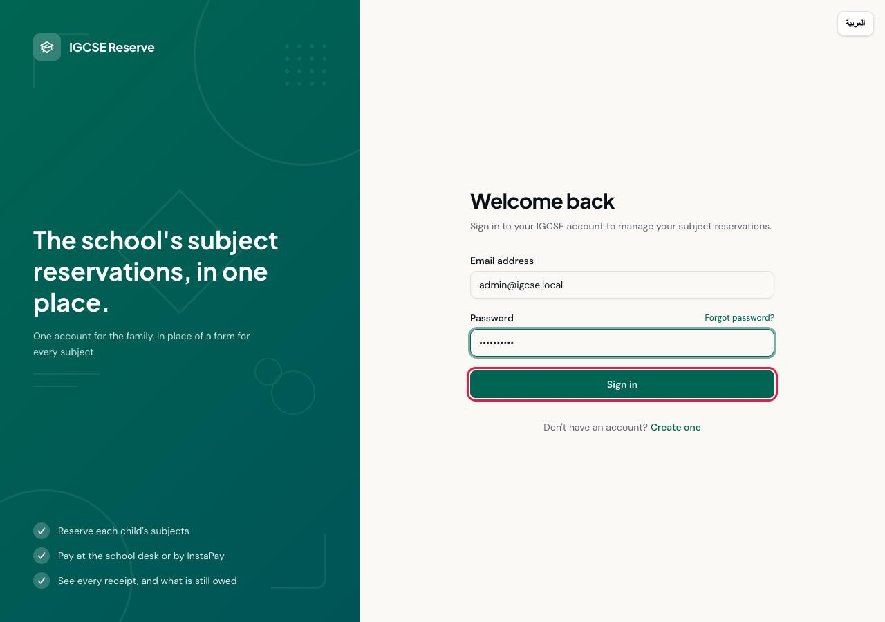
1.4Your Home page and the column on the left
Where you are: Home.
Home says where each session stands and what it still needs. Today it says No session is open or being prepared. Its button Start the next session opens Sessions, the screen chapter 7 uses; leave it for now.
The column on the left lists the screens. Everything in this guide is under its first heading, SET UP: Sessions, Exam Catalogue, Board Series, Board Services, School Fees, Settings, Day-one Import and Team. Home is above them. At the bottom are your name and Sign Out.
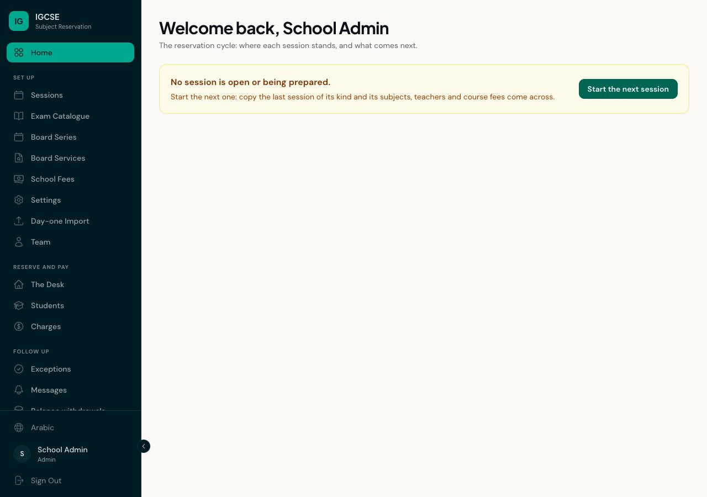
2. The school's name
This puts the school's name on the sign-in page, so a family knows the account is the school's. It is the first thing anyone sees, so it comes first; nothing later depends on it.
2.1Open the school's name
Where you are: Settings in the left column.
- Click Settings in the left column.
- The first card is The school's name. It says Not set: the sign-in page shows the app's name alone.
- Click its Change.
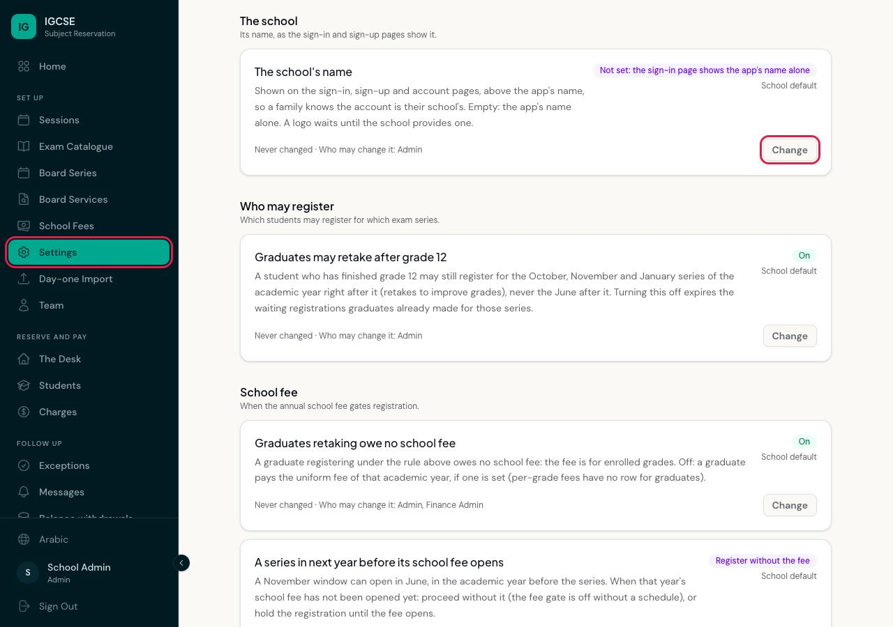
2.2Type the name
Where you are: Settings, the card The school's name.
- New value: the school's name as it should print.
- Reason: a few words, for example The school's name on the sign-in page. Every change on Settings asks why; the reason is kept in the record of changes.
- Click Save change.
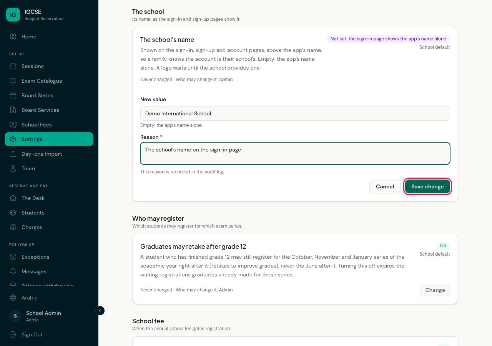
2.3Saved
Where you are: Settings.
You see: the card shows the name and Last changed with the date and your name.
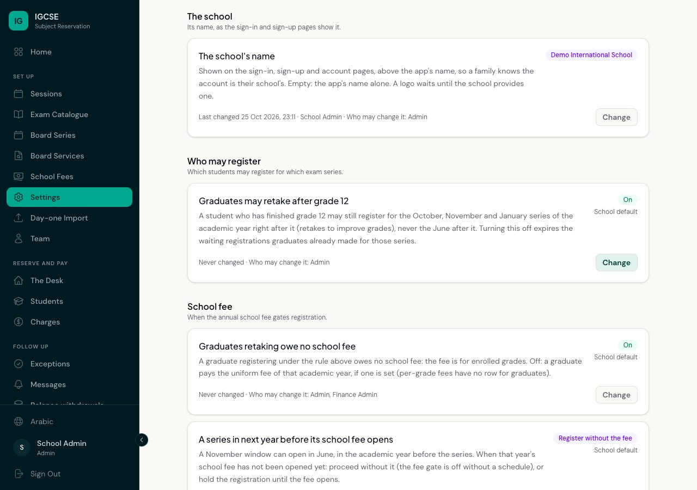
2.4The sign-in page carries it
To look, click Sign Out at the bottom of the left column, then sign in again as in step 1.3.
You see: the school's name above the system's name on the sign-in page.
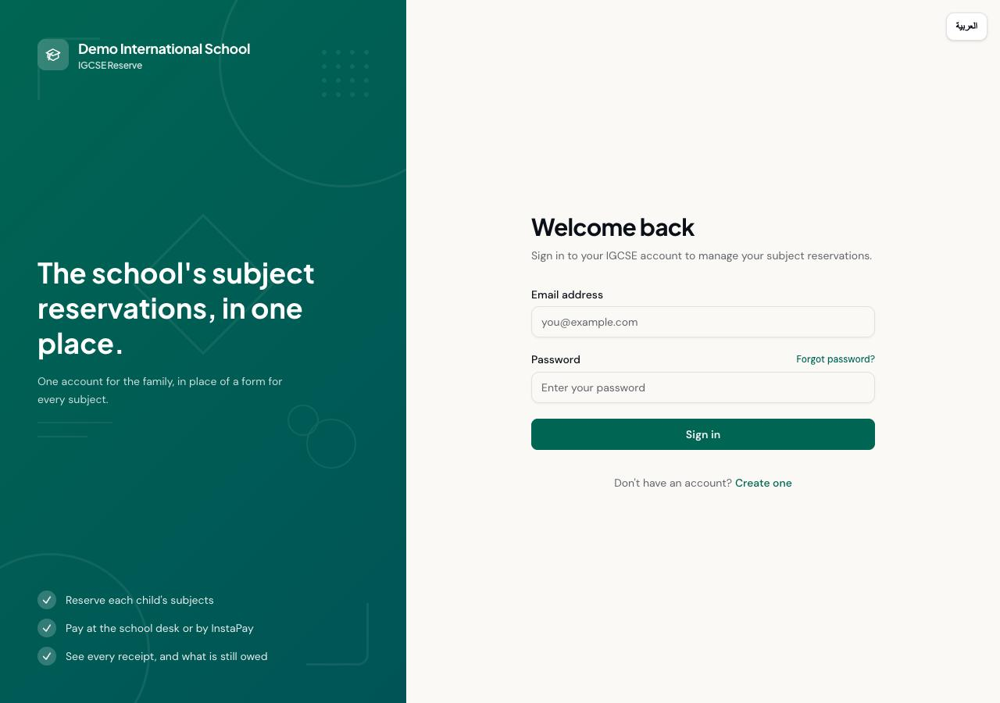
3. Your team
This gives an account to the two people who run the session with you: the coordinator, who keeps the sheet and checks declared retakes, and the finance officer, who works the desk. Teachers do not need an account for the session: they get their names on the system in the next chapter.
3.1Open Team
Where you are: Team in the left column.
Click Team. The page Team & Accounts has the form to make an account at the top and, under it, everyone who has one (Staff, Students, Parents). Today the list holds only you.
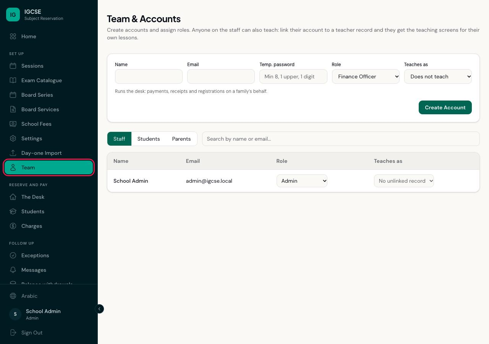
3.2The coordinator
Where you are: Team.
- Name: the coordinator's name.
- Email: the email they will sign in with.
- Temp. password: a first password of at least 8 characters with a capital letter and a digit (the box says Min 8, 1 upper, 1 digit).
- Role: Coordinator.
- Teaches as: leave Does not teach.
- Click Create Account.
You see: Account created for and their email, with Share the temporary password with them directly.
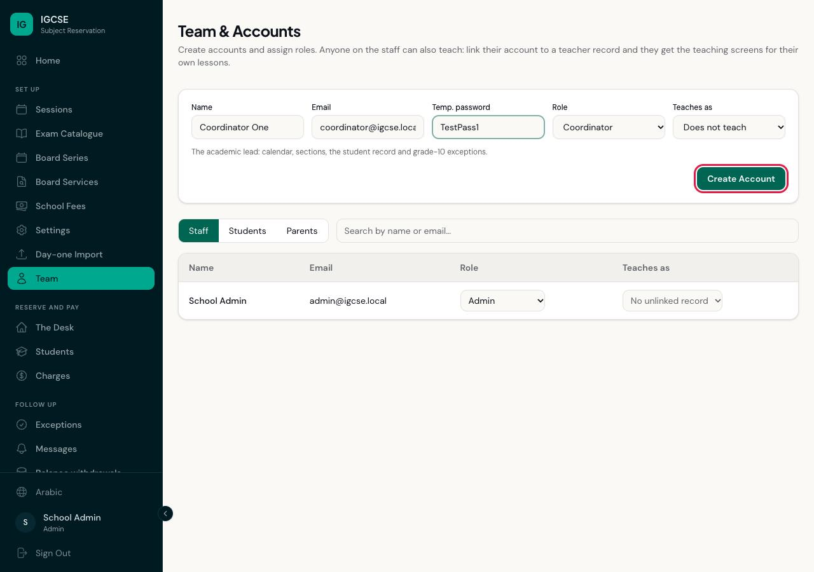
3.3The finance officer
Where you are: Team.
The same, with Role: Finance Officer (the line under the form says what the role does: Runs the desk: payments, receipts and registrations on a family’s behalf.). Choose Finance Admin instead for a person who also handles refunds, exceptions and fee schedules.
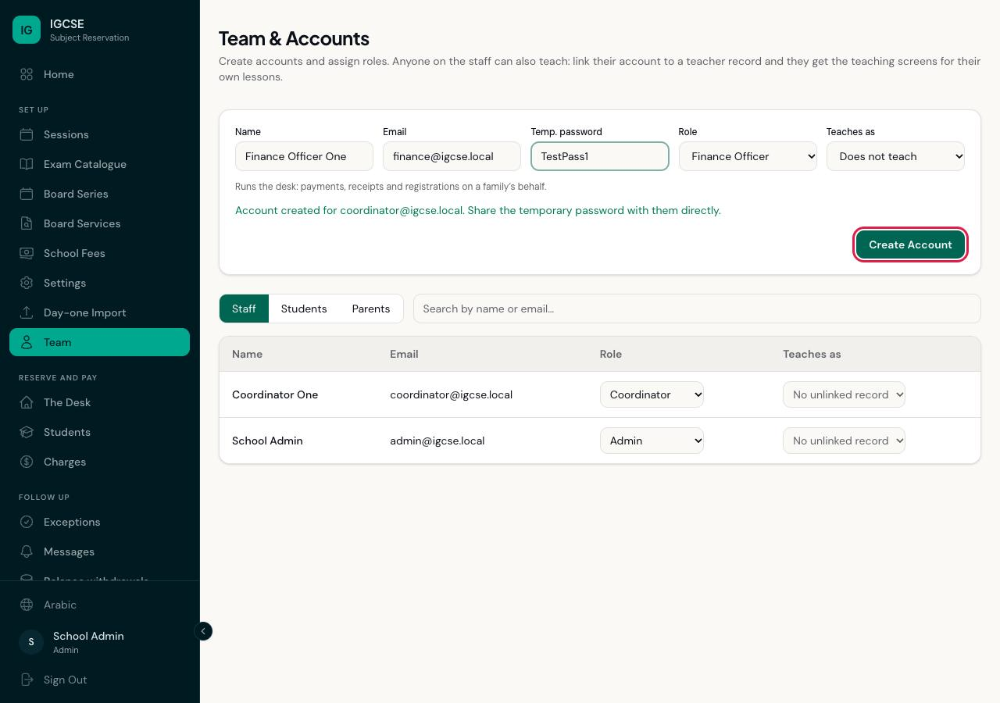
3.4Your staff
Where you are: Team, the Staff list.
Give each person the address of the system (step 1.2), their email and their temporary password yourself.
You see: the coordinator, the finance officer and you, each with their role.
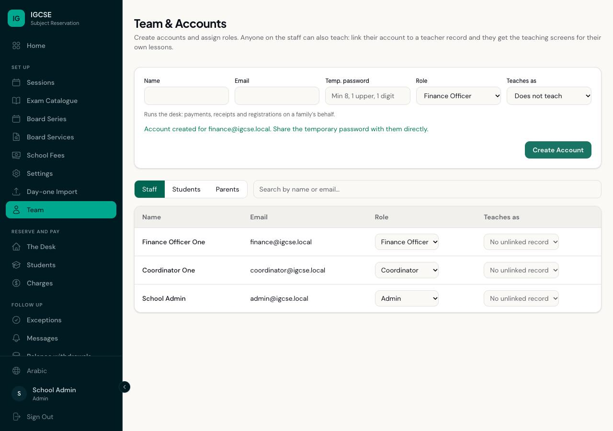
4. The 25 subjects and their teachers
This puts on the system the 25 subjects of the June 2027 links sheet and, for each, the teachers its form names. The session's sheet in chapter 8 can only list a subject that exists here, and it offers each subject the teachers you give it here.
4.1Open the subject list
Where you are: Exam Catalogue in the left column.
- Click Exam Catalogue.
- Click Import several from a list (on the right, above the empty list).
The page Subject Management opens with the box Import subjects from Excel. This page is not in the left column: this button is the way to it, and it is the way back to it later in this chapter.
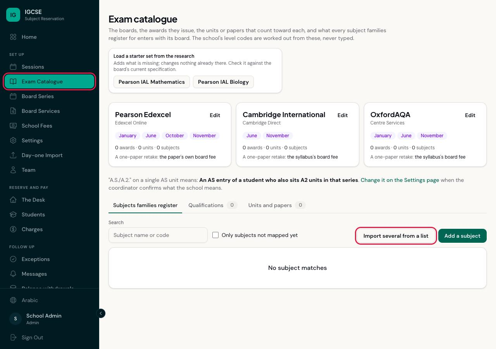
4.2Paste the 25 subjects
Where you are: Subject Management, the box Import subjects from Excel.
- Click Copy on the block below.
- Click in the big empty box on the screen and paste (Ctrl+V, or ⌘+V on a Mac).
- Click Import.
name,code,board,level,course fee Arabic,3180,Cambridge,IGCSE,0 Biology,0970,Cambridge,IGCSE,0 Business,0986,Cambridge,IGCSE,0 Chemistry,0971,Cambridge,IGCSE,0 Combined Science,0653,Cambridge,IGCSE,0 Computer Science,0984,Cambridge,IGCSE,0 English as a Second Language,ESL-OXFORD,Oxford,IGCSE,0 Environmental Management,0680,Cambridge,IGCSE,0 French,7156,Cambridge,IGCSE,0 German,7159,Cambridge,IGCSE,0 Global Perspectives,0457,Cambridge,IGCSE,0 Global Citizenship,GLOBAL-CIT,Cambridge,IGCSE,0 Human Biology,4HB1,Pearson Edexcel,IGCSE,0 ICT,0983,Cambridge,IGCSE,0 Mathematics,4MA1,Pearson Edexcel,IGCSE,0 Physics,0972,Cambridge,IGCSE,0 Psychology,PSY-OXFORD,Oxford,IGCSE,0 Arabic A.L.,ARABIC-AL,Pearson Edexcel,A Level,0 Biology A.S./A.L.,IAL-BIOLOGY,Pearson Edexcel,A Level,0 Chemistry A.S.,CHEM-AS,Cambridge,AS Level,0 Computer Science A.S./A.L.,CS-ASAL,Cambridge,AS Level,0 French A.S./A.L.,FRENCH-ASAL,Cambridge,AS Level,0 Mathematics A.S./A.L.,IAL-MATHS,Pearson Edexcel,A Level,0 Physics A.S./A.L.,PHYS-ASAL,Cambridge,AS Level,0 Psychology A.L.,PSY-AL,Cambridge,A Level,0
Each line is one form: the subject's name as families will read it (the O.L. subjects keep their plain names: the
sheet and the families' page put them under "O.L."), its code (the board's syllabus code where the boards' lists have one;
a short code of the school's own where they do not, such as ESL-OXFORD), its board, its level, and a
course fee of 0. The 0 is only a starting value: you type each subject's real course fee on the session in chapter 8,
which is the fee families pay. You may change a name before you click Import (for example Business Studies for
Business); keep the four commas of each line.
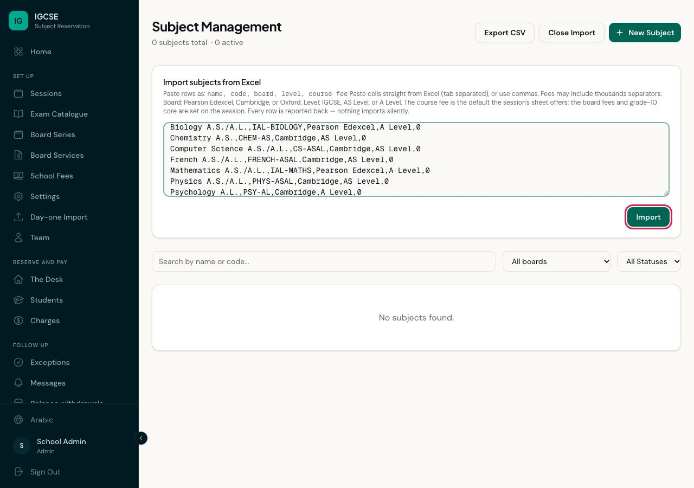
4.3Imported
Where you are: Subject Management.
You see: Imported 25 subject(s). and the 25 subjects in the list below, each Active, with Edit, Teachers and Deactivate on its row. A line the page could not take is listed under Problems: with the reason; correct that line and paste it alone. Pasting a line twice changes nothing: the second time it says the code is already in use.
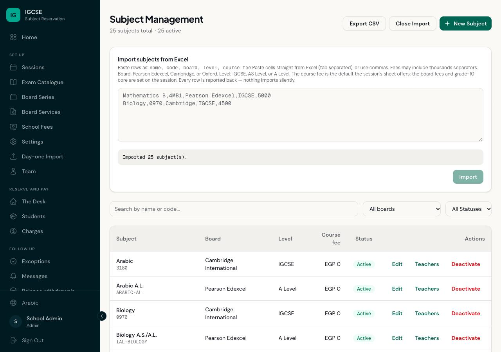
4.4A subject's teachers: Arabic
Where you are: Subject Management.
- Click Close Import at the top to put the box away.
- On the row Arabic, click Teachers.
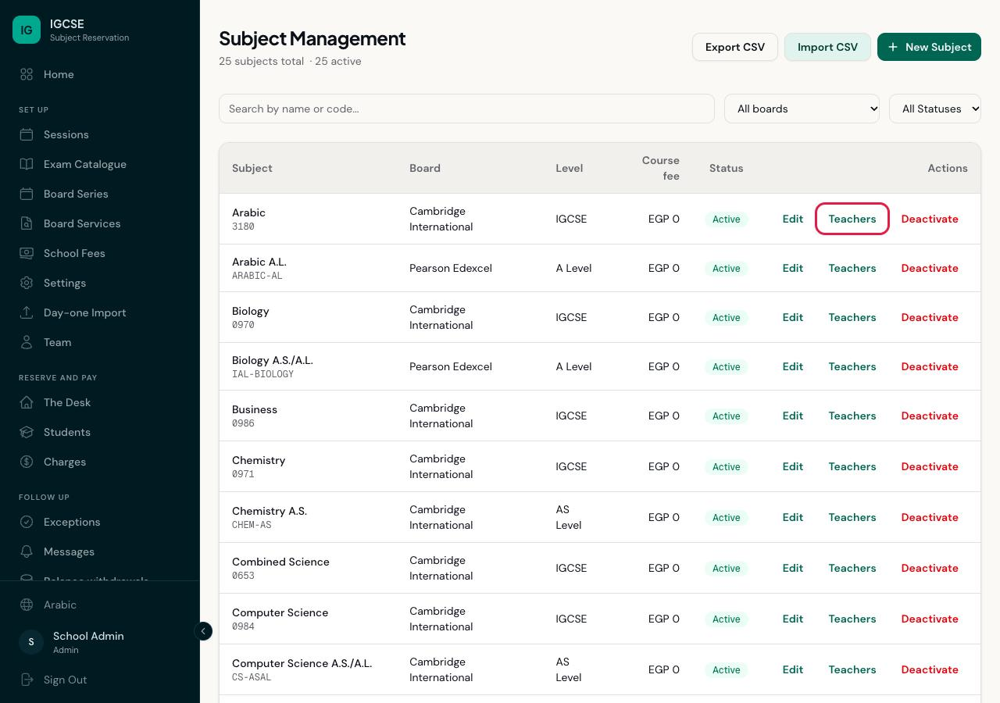
4.5Type the names
Where you are: the window Teachers — Arabic.
- Click in the box Teacher name — or paste several, one per line.
- Type the three teachers your Arabic O.L. form names (T1, T2, T3 on the form), each as the form names them, one per line (press Enter between two names).
- Click Add.
The forms list "Self study (Only for 2nd entry ONLY)" or "Self Study 50%" among the teachers. That is not a teacher: do not type it. It is the retake in self study, which every subject offers once you choose its Offered as in chapter 8.
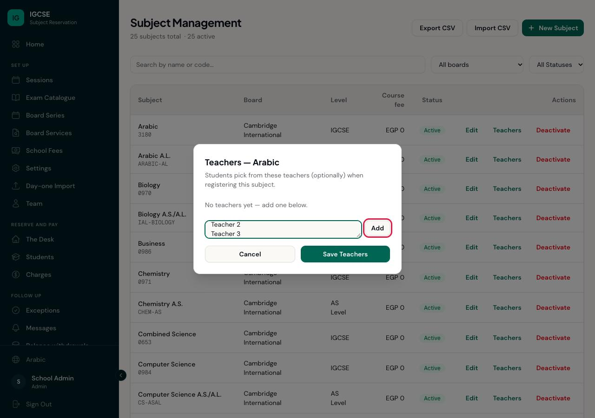
4.6Save the teachers
Where you are: the window Teachers — Arabic.
The names are in the list, ticked. Click Save Teachers.
You see: the window closes. Arabic now has its three teachers.
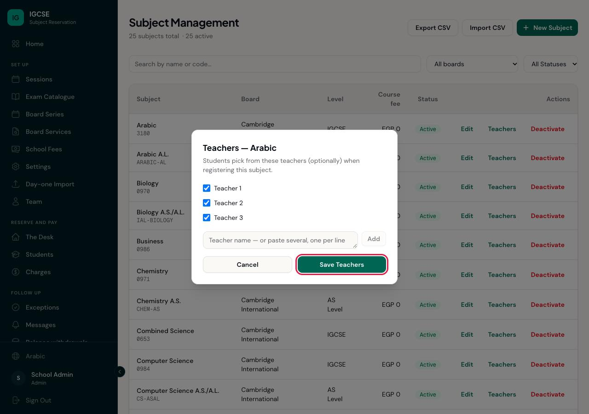
4.7The other subjects
Where you are: Subject Management.
Do the same for each subject below: its row's Teachers, the names its form gives, Add, Save Teachers. The window lists every teacher already on the system: a teacher who teaches a second subject is ticked, not typed again — find the name in the list and tick it.
| Subject | Teachers its form names — what to type |
|---|---|
| Arabic | 3 — T1, T2, T3 |
| Biology | 3 — T1, T2, T3 |
| Business | 1 — the one teacher named in the form's description |
| Chemistry | 3 — T1, T2, T3 |
| Combined Science | 1 — the one teacher named in the form's description |
| Computer Science | none here: an external team teaches it; you name the team on its form in chapter 8 |
| English as a Second Language | 2 — T1 (Oxford), T2 (Oxford) |
| Environmental Management | 1 — the one teacher named in the form's description |
| French | 1 — the one teacher named in the form's description |
| German | 1 — the one teacher named in the form's description |
| Global Perspectives | 1 — the one teacher named in the form's description |
| Global Citizenship | 1 — the one teacher named in the form's description |
| Human Biology | 1 — the one teacher named in the form's description |
| ICT | none here: an external team teaches it; you name the team on its form in chapter 8 |
| Mathematics | 3 — T1, T2, T3 |
| Physics | 1 — T1 |
| Psychology | 1 — the one teacher named in the form's description |
| Arabic A.L. | 2 — T1 "(Edexcel YAA01)", T2 "(Edexcel 9AA01)" |
| Biology A.S./A.L. | 1 — the one teacher named in the form's description |
| Chemistry A.S. | 1 — the one teacher named in the form's description |
| Computer Science A.S./A.L. | none here: an external team teaches it; you name the team on its form in chapter 8 |
| French A.S./A.L. | 1 — the one teacher named in the form's description |
| Mathematics A.S./A.L. | 2 — T1 and T2 (named unit by unit) |
| Physics A.S./A.L. | 1 — T1 (inside the A.S. option) |
| Psychology A.L. | 1 — the one teacher named in the form's description |
For Arabic A.L. give both teachers here: the one who teaches the IAL (YAA01) and the one who teaches the GCE (9AA01 on the form). Step 8.21 gives each its qualification.
You see: each subject's own teachers ticked when you open its window again.
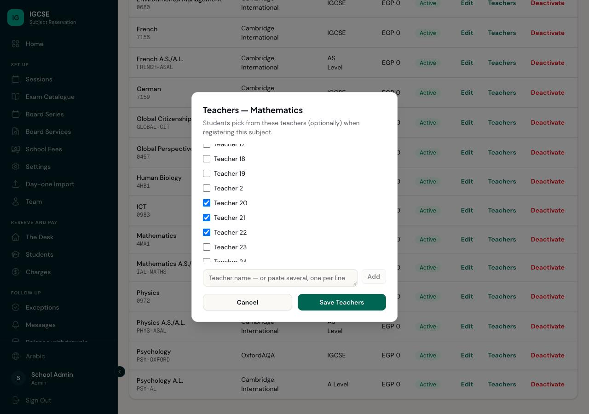
4.8If a teacher must sign in (not needed for this session)
Where you are: Team in the left column.
A teacher's name is all the session needs. A teacher's own account has, today, only Home, Notifications and Profile; you do not need to make one. If the school wants a teacher to sign in all the same:
- Name, Email, Temp. password as in step 3.2.
- Role: Teacher.
- Teaches as: pick the teacher's name in the list (the name you made in this chapter), not New teacher record (this name), which would make a second one.
- Create Account.
You see: the account in the Staff list, with the teacher's name under Teaches as.
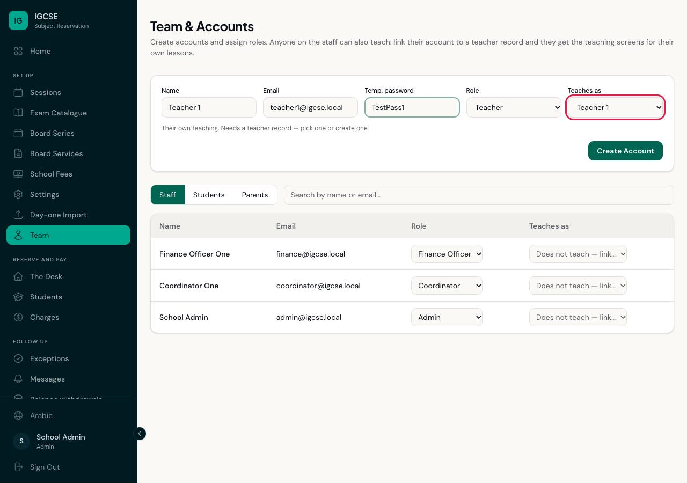
5. What each subject enters with its board (the Exam Catalogue)
This tells the system what each subject enters with its board: a Cambridge syllabus and its option code, the papers of a one-paper retake, the Pearson IAL units, the A.S., A.2. and A.L. routes. The session's sheet in chapter 8 builds each subject's choices from what you set here, and the boards' fees in chapter 9 are matched by these codes.
5.1Load the two Pearson IAL sets
Where you are: Exam Catalogue in the left column.
At the top, the box Load a starter set from the research holds the Pearson International A Level units of Mathematics and Biology, with their boards' codes, ready made.
- Click Pearson IAL Mathematics.
- Click Pearson IAL Biology.
Clicking one twice changes nothing.
You see: Added with the number of units and awards (for Biology, Added 6 units and 2 awards.); the Pearson Edexcel card counts them. The units have the boards' codes: WMA11 P1 … WST01 S1, WBI11 Unit 1 … WBI16 Unit 6.
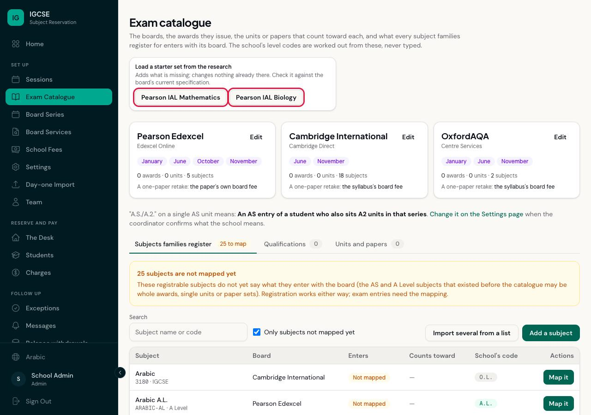
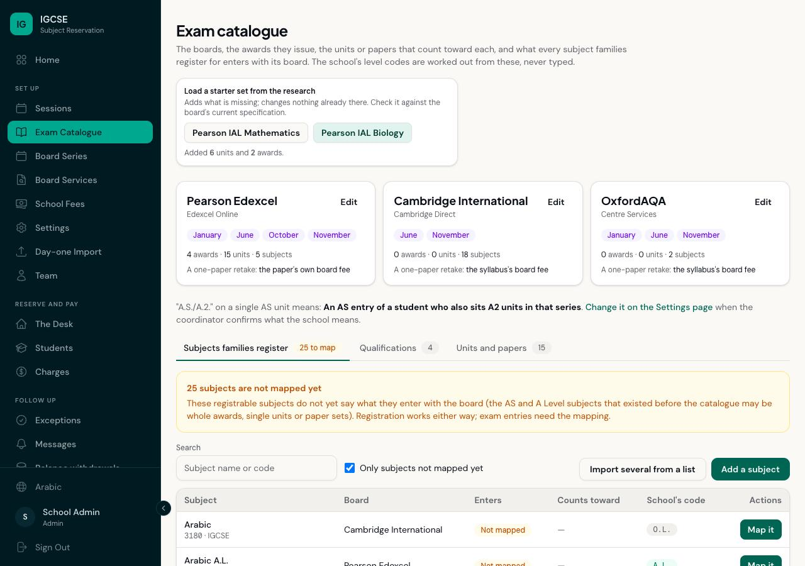
5.2The papers of the one-paper retakes
Where you are: Exam Catalogue, the tab Units and papers.
Seven forms offer a retake of one paper only (Arabic, Biology, Chemistry, Combined Science, ICT, Mathematics and Physics O.L.). Each paper is added once, here.
- Click the tab Units and papers.
- In the green box Add a unit or paper: Board, Code, School's name and Title from the first line of the table; Its own level: IGCSE / O Level; Tier (where the syllabus fixes it): leave None; Kind: Component (paper).
- Click Add the unit. The box says Added with the code, keeps the board, level and kind, and waits for the next code: type the next line's code, name and title, and press Enter.
- For the last two lines choose Board Pearson Edexcel: the Kind then turns to Unit on its own; set it back to Component (paper).
| Board | Code | School's name | Title | For the form |
|---|---|---|---|---|
| Cambridge International | 3180/01 | Paper 1 | Arabic Paper 1 | Arabic O.L.: "(One paper ONLY)" |
| Cambridge International | 3180/02 | Paper 2 | Arabic Paper 2 | Arabic O.L.: "(One paper ONLY)" |
| Cambridge International | 0970/41 | Paper 41/42 | Biology Theory (Extended) | Biology O.L.: "(Paper 41/42 ONLY)" |
| Cambridge International | 0971/41 | Paper 41/42 | Chemistry Theory (Extended) | Chemistry O.L.: "(Paper 41/42 ONLY)" |
| Cambridge International | 0653/41 | Paper 41/42 | Combined Science Theory (Extended) | Combined Science O.L.: "(Paper 41/42 ONLY)" |
| Cambridge International | 0972/41 | Paper 41/42 | Physics Theory (Extended) | Physics O.L.: "(Paper 41/42 ONLY)" |
| Cambridge International | 0983/01 | Theory Paper | ICT Theory | ICT O.L.: "(Theory Paper ONLY)" |
| Pearson Edexcel | 4MA1/1H | 1H | Mathematics Paper 1H (Higher) | Mathematics O.L.: "(One Paper ONLY): 1H" |
| Pearson Edexcel | 4MA1/2H | 2H | Mathematics Paper 2H (Higher) | Mathematics O.L.: "(One Paper ONLY): 2H" |
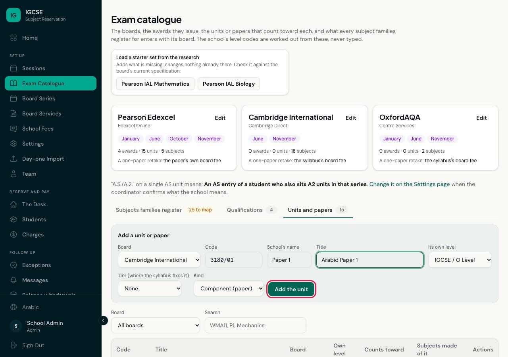
5.3The papers, added
Where you are: Exam Catalogue, Units and papers.
Choose Cambridge International in Board above the list to see the seven Cambridge papers; Pearson Edexcel holds 1H and 2H beside the IAL units.
You see: each paper with its code, its School's name in grey, Component (paper) and IGCSE / O Level.
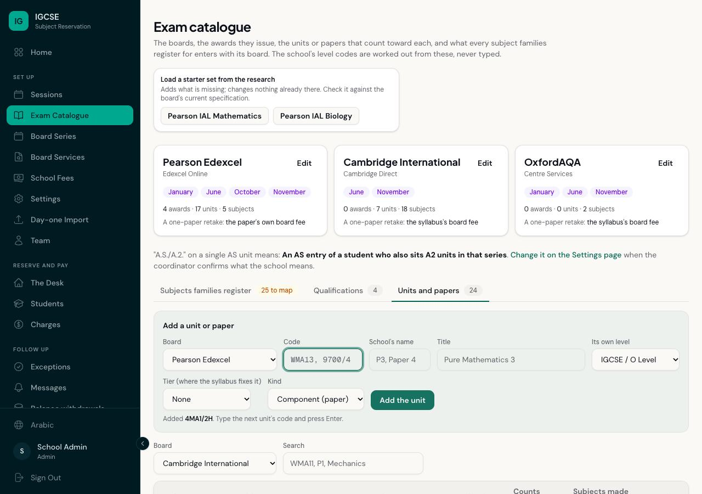
5.4An award: Biology
Where you are: Exam Catalogue, the tab Qualifications.
An award is what the board issues: a Cambridge syllabus, a Pearson qualification. Each subject needs its award.
- Click the tab Qualifications.
- In Add an award: Board Cambridge International; Code (cash-in or syllabus)
0970; Title Biology; Level IGCSE; Suite Cambridge IGCSE; Subject (AS and A Level share it) Biology; How the board takes the entry Syllabus with an option code; Tier (only if the syllabus fixes it): leave Chosen per entry. - Click Add the award.
You see: the card "0970 Biology" under Cambridge International.
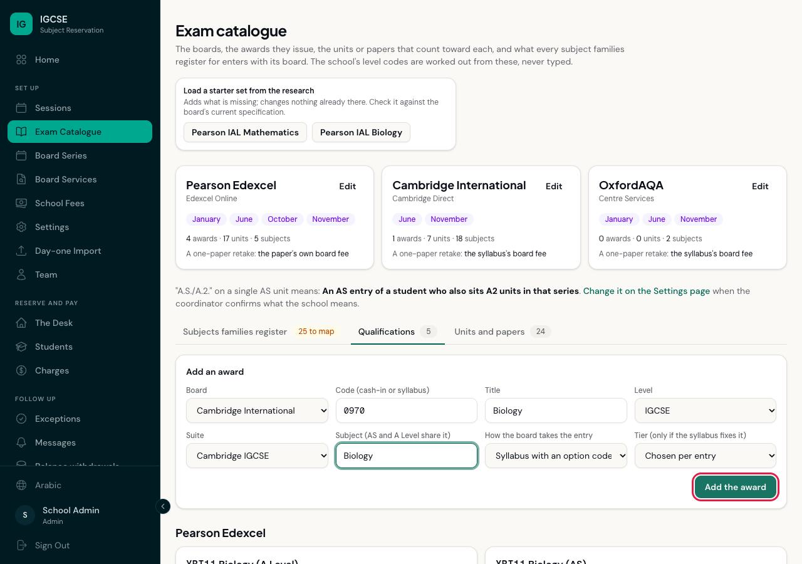
5.5The other awards
Where you are: Exam Catalogue, Qualifications.
Add each award of the table the same way. Biology is already added (step 5.4): skip its line. After Add the award the box empties Code (cash-in or syllabus), Title and Subject (AS and A Level share it) but keeps Board, Level, Suite, How the board takes the entry and the tier: check each of them on every line and change the ones that differ. Choose the Board first, since the Suite list follows it.
| Board | Code | Title | Level | Suite | Subject (AS and A Level share it) | How the board takes the entry |
|---|---|---|---|---|---|---|
| Cambridge International | 3180 | Arabic | IGCSE | Cambridge IGCSE | Arabic | Syllabus with an option code |
| Cambridge International | 0970 | Biology | IGCSE | Cambridge IGCSE | Biology | Syllabus with an option code |
| Cambridge International | 0986 | Business Studies | IGCSE | Cambridge IGCSE | Business Studies | Syllabus with an option code |
| Cambridge International | 0971 | Chemistry | IGCSE | Cambridge IGCSE | Chemistry | Syllabus with an option code |
| Cambridge International | 0653 | Combined Science | IGCSE | Cambridge IGCSE | Combined Science | Syllabus with an option code |
| Cambridge International | 0984 | Computer Science | IGCSE | Cambridge IGCSE | Computer Science | Syllabus with an option code |
| OxfordAQA | ESL-OXFORD | English as a Second Language | IGCSE | OxfordAQA International GCSE | English as a Second Language | Entered by its code |
| Cambridge International | 0680 | Environmental Management | IGCSE | Cambridge IGCSE | Environmental Management | Syllabus with an option code |
| Cambridge International | 7156 | French | IGCSE | Cambridge IGCSE | French | Syllabus with an option code |
| Cambridge International | 7159 | German | IGCSE | Cambridge IGCSE | German | Syllabus with an option code |
| Cambridge International | 0457 | Global Perspectives | IGCSE | Cambridge IGCSE | Global Perspectives | Syllabus with an option code |
| Cambridge International | GLOBAL-CIT | Global Citizenship | IGCSE | Cambridge IGCSE | Global Citizenship | Syllabus with an option code |
| Pearson Edexcel | 4HB1 | Human Biology | IGCSE | International GCSE | Human Biology | Entered by its code |
| Cambridge International | 0983 | ICT | IGCSE | Cambridge IGCSE | ICT | Syllabus with an option code |
| Pearson Edexcel | 4MA1 | Mathematics A | IGCSE | International GCSE | Mathematics | Entered by its code |
| Cambridge International | 0972 | Physics | IGCSE | Cambridge IGCSE | Physics | Syllabus with an option code |
| OxfordAQA | PSY-OXFORD | Psychology | IGCSE | OxfordAQA International GCSE | Psychology | Entered by its code |
| Pearson Edexcel | YAA01 | Arabic (International A Level) | A Level | International A Level | Arabic | Units, then a cash-in for the award |
| Pearson Edexcel | 9AA0 | Arabic (GCE A Level) | A Level | — | Arabic | Entered by its code |
| Cambridge International | 9701 | Chemistry (AS Level) | AS Level | Cambridge International AS & A Level | Chemistry | Syllabus with an option code |
| Cambridge International | 9701 | Chemistry (A Level) | A Level | Cambridge International AS & A Level | Chemistry | Syllabus with an option code |
| Cambridge International | 9618 | Computer Science (AS Level) | AS Level | Cambridge International AS & A Level | Computer Science | Syllabus with an option code |
| Cambridge International | 9618 | Computer Science (A Level) | A Level | Cambridge International AS & A Level | Computer Science | Syllabus with an option code |
| Cambridge International | 9898 | French (AS Level) | AS Level | Cambridge International AS & A Level | French | Syllabus with an option code |
| Cambridge International | 9898 | French (A Level) | A Level | Cambridge International AS & A Level | French | Syllabus with an option code |
| Cambridge International | 9702 | Physics (AS Level) | AS Level | Cambridge International AS & A Level | Physics | Syllabus with an option code |
| Cambridge International | 9702 | Physics (A Level) | A Level | Cambridge International AS & A Level | Physics | Syllabus with an option code |
| Cambridge International | 9990 | Psychology (A Level) | A Level | Cambridge International AS & A Level | Psychology | Syllabus with an option code |
Why two awards for some subjects:
- A Cambridge A level has two awards under one code: its AS Level and its A Level (9701, 9618, 9898, 9702). Type the same Subject (AS and A Level share it) for both.
- Arabic A.L. has two qualifications, one per teacher: the International A Level
YAA01and the GCE A Level9AA0(the form writes "9AA01"). The GCE has no suite in the list: leave Suite at —, and type Arabic as the subject for both. - The two Pearson IAL subjects need no award here: their units came with the starter sets.
Codes to confirm with the coordinator before chapter 9. The French and Psychology A level codes
(9898 with its options S1 and AX, 9990), Global Citizenship
(GLOBAL-CIT) and the two OxfordAQA codes (ESL-OXFORD, PSY-OXFORD) are on no list the
school has: they are this guide's best reading of the boards' current codes, and the coordinator checks them against the boards'
entry codes. An award's code cannot be changed on its card (the card has only Edit units and Retire): a wrong one is
retired with Retire, added again with the right code, and its subject mapped again as in step 5.9. Arabic
3180 is a Cambridge O Level syllabus, though the fee list prints it under IGCSE: choose the Suite
Cambridge O Level for it if the coordinator says so.
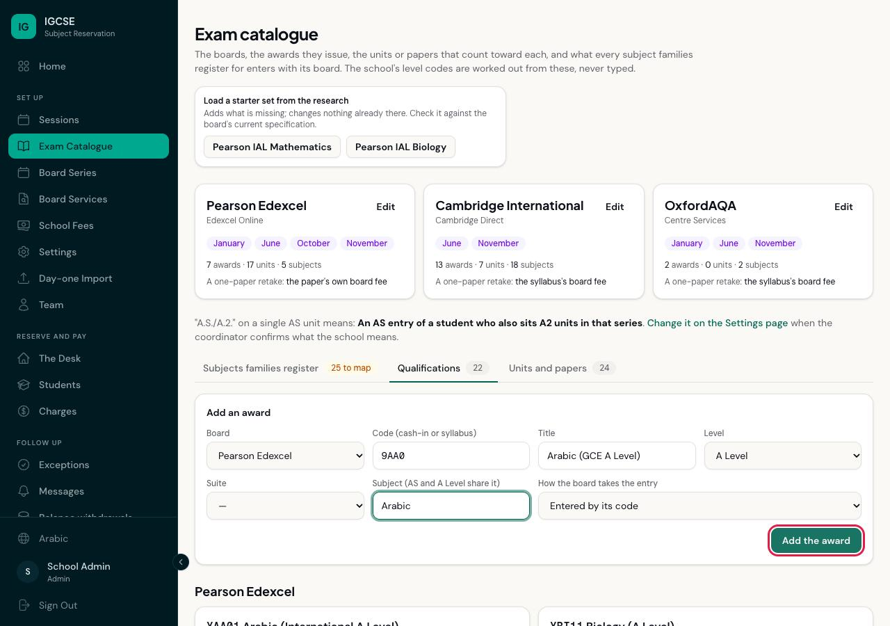
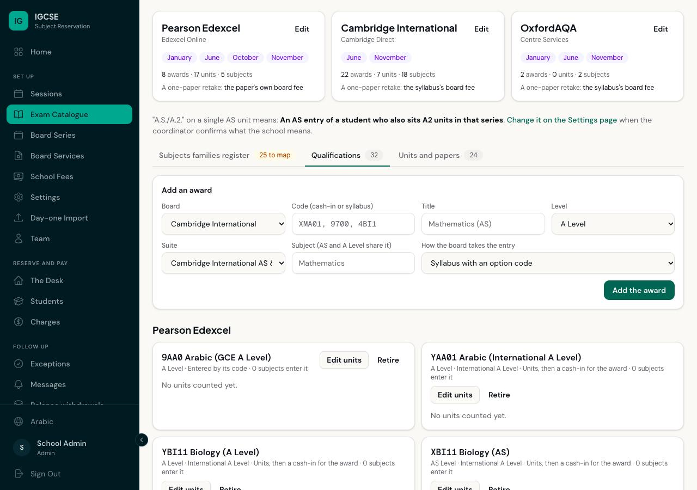
5.6Each award's papers
Where you are: Exam Catalogue, Qualifications.
- On the card 0970 Biology, click Edit units.
- Tick
0970/41Paper 41/42; leave Required beside it. - Click Save the units.
The same for each award with a paper:
| Award | Tick |
|---|---|
3180 Arabic | 3180/01, 3180/02 |
0970 Biology | 0970/41 |
0971 Chemistry | 0971/41 |
0653 Combined Science | 0653/41 |
0983 ICT | 0983/01 |
4MA1 Mathematics A | 4MA1/1H, 4MA1/2H |
0972 Physics | 0972/41 |
You see: the card lists the paper with "Required".
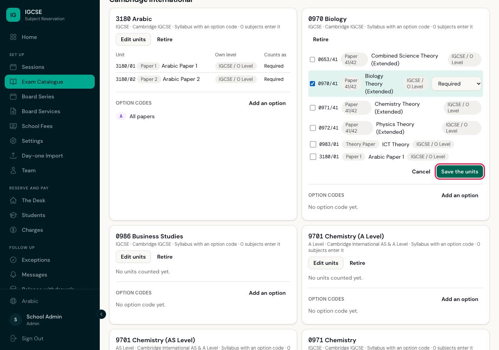
5.7The option codes of the O.L. syllabi
Where you are: Exam Catalogue, Qualifications.
Cambridge enters a
syllabus with an option code, the one its fee list prints beside the syllabus (Biology 0970 CX).
- On the card 0970 Biology, under OPTION CODES, click Add an option.
- In the small box (it shows AX in grey) type
CX; in the long box beside it type All papers. - Leave Components it enters and Carries forward marks from an earlier series unticked.
- Click Add the option.
| Award | Small box | Long box | Carries forward… |
|---|---|---|---|
3180 Arabic | A | All papers | — |
0970 Biology | CX | All papers | — |
0986 Business Studies | AX | All papers | — |
0971 Chemistry | CX | All papers | — |
0653 Combined Science | CX | All papers | — |
0984 Computer Science | AX | All papers | — |
7156 French | X | All papers | — |
7159 German | Y | All papers | — |
0983 ICT | DY | All papers | — |
0972 Physics | CX | All papers | — |
Environmental Management, Global Perspectives and Global Citizenship have no option code in the lists the school has: they get none (the board fee is then typed against the syllabus itself in chapter 9).
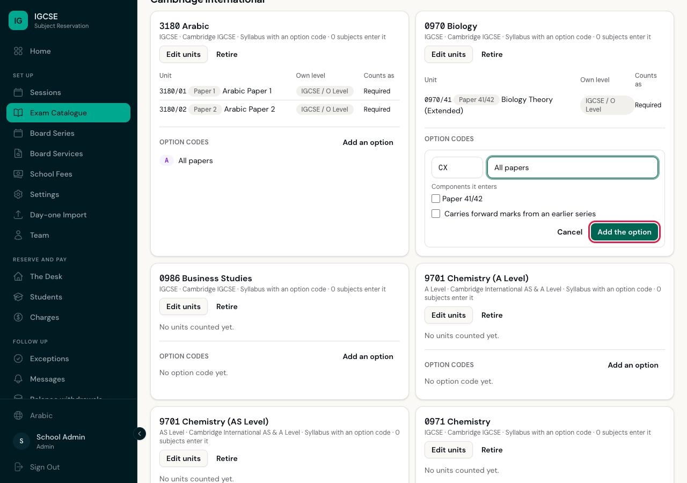
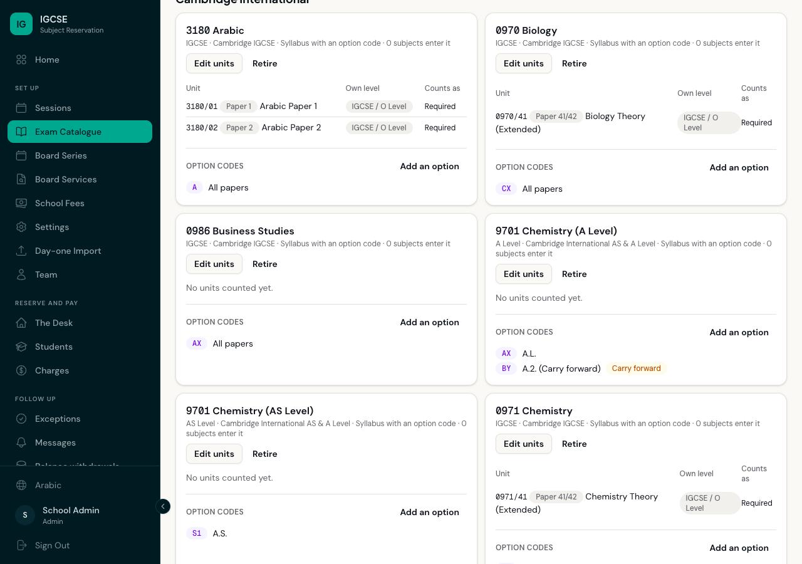
5.8The A level routes: A.S., A.2. and A.L.
Where you are: Exam Catalogue, Qualifications.
The Cambridge A level forms offer "A.S.", "A.2. (Carry forward)" and "A.L.". Each is an option code of the A level's two awards, and families read the words you type in the long box. Add these options the same way; on each A.2. option also tick Carries forward marks from an earlier series.
| Award | Small box | Long box (families read it) | Carries forward… |
|---|---|---|---|
9701 Chemistry (AS Level) | S1 | A.S. | — |
9701 Chemistry (A Level) | BY | A.2. (Carry forward) | ticked |
9701 Chemistry (A Level) | AX | A.L. | — |
9618 Computer Science (AS Level) | SY | A.S. | — |
9618 Computer Science (A Level) | BY | A.2. (Carry forward) | ticked |
9618 Computer Science (A Level) | AY | A.L. | — |
9898 French (AS Level) | S1 | A.S. | — |
9898 French (A Level) | AX | A.L. | — |
9702 Physics (AS Level) | S1 | A.S. | — |
9702 Physics (A Level) | BX | A.2. (Carry forward) | ticked |
9702 Physics (A Level) | AX | A.L. | — |
Psychology A.L. (9990) has one route, the full A level: it gets no option.
Where Cambridge's list prints two codes for one route (S1 / S2, BY / CT,
BX / CQ, AX / HX), the price is the same but the code is the one the school enters with the board. This
guide uses the first; the coordinator decides which the school enters. Use that one here and in the fee list of step 9.3.
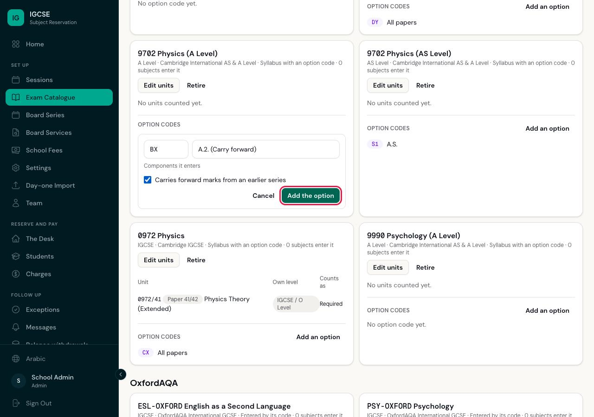
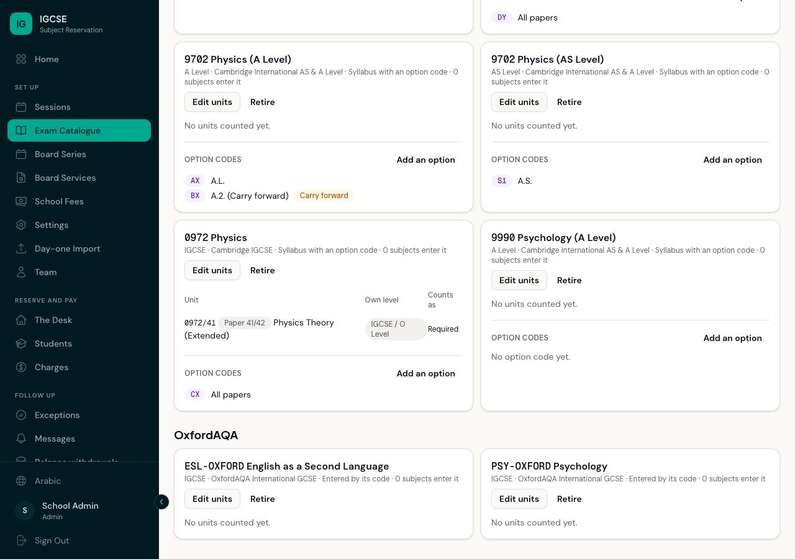
5.9Map each subject: what it enters
Where you are: Exam Catalogue, the tab Subjects families register.
The last part ties each of the 25 subjects to its award or units. The tab says 25 to map, and Only subjects not mapped yet is ticked, so the list shrinks as you go.
- Click the tab Subjects families register.
- In Search, type the subject's code (Arabic:
3180). - Click Map it on its row.
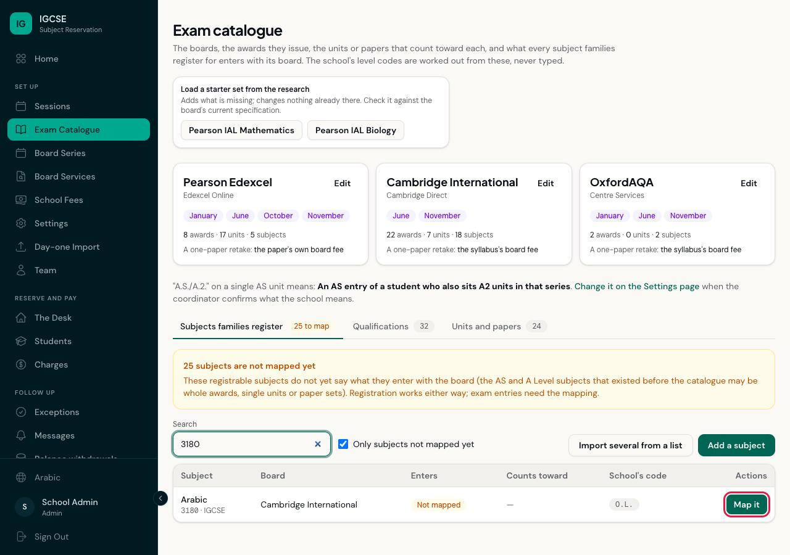
5.10Biology
Where you are: the window What Biology enters.
- Board it is entered with is already chosen (Cambridge International). Leave it.
- The award it enters:
0970 — Biology. - Leave Components (optional) unticked and Note (optional, kept in the audit log) empty.
- Click Save, then Close.
You see: Saved and No registration had to move.
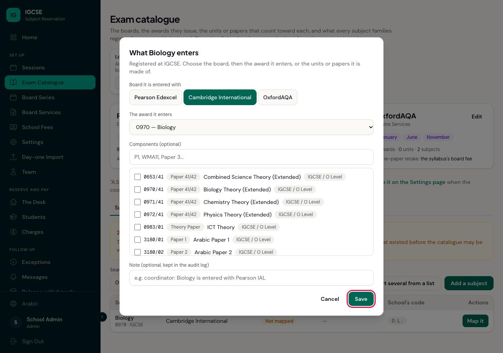
5.11An IAL subject: Mathematics A.S./A.L.
Where you are: the window What Mathematics A.S./A.L. enters.
- The award it enters (leave empty for units or papers only): leave None.
- Under Units or papers it is made of, tick
WMA11P1,WMA12P2,WMA13P3,WMA14P4,WME01M1 andWST01S1 — the six units the form offers. Leave M2, S2 and D1. - Save, Close.
Biology A.S./A.L. the same way, with WBI11 to WBI16 (Units 1 to 6).
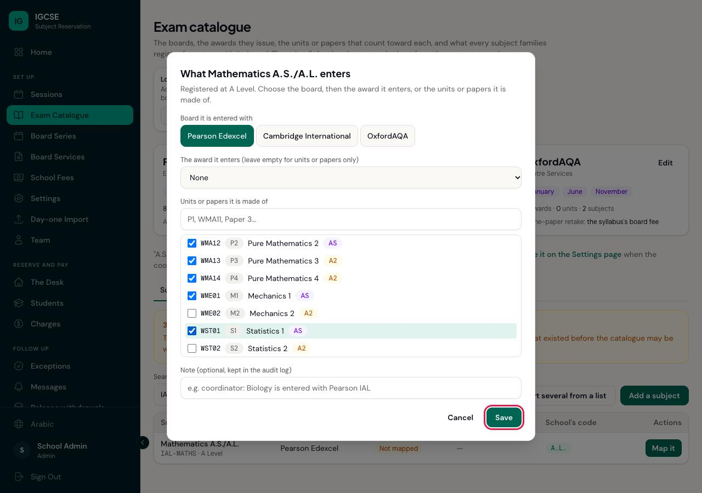
5.12A Cambridge A level: Chemistry A.S.
Where you are: the window What Chemistry A.S. enters.
A Cambridge A level subject enters its AS award; its A.2. and A.L. routes come with it.
- The award it enters (leave empty for units or papers only):
9701 — Chemistry (AS Level). - Save, Close.
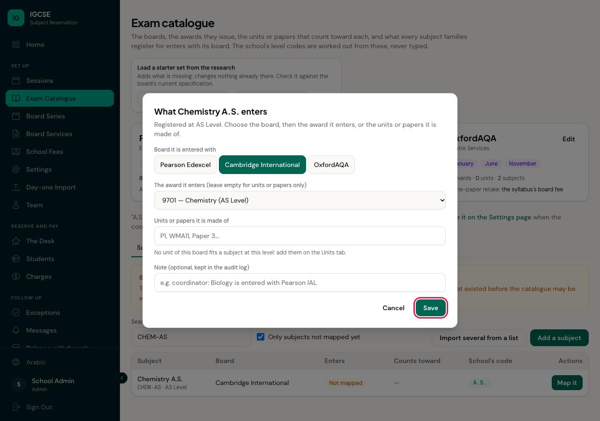
5.13Every subject, mapped
Where you are: Exam Catalogue, Subjects families register.
Map the rest from this table (the ones above are in it too):
| Subject | Search | In the window |
|---|---|---|
| Arabic | 3180 | The award it enters: 3180 — Arabic |
| Biology | 0970 | The award it enters: 0970 — Biology |
| Business | 0986 | The award it enters: 0986 — Business Studies |
| Chemistry | 0971 | The award it enters: 0971 — Chemistry |
| Combined Science | 0653 | The award it enters: 0653 — Combined Science |
| Computer Science | 0984 | The award it enters: 0984 — Computer Science |
| English as a Second Language | ESL-OXFORD | The award it enters: ESL-OXFORD — English as a Second Language |
| Environmental Management | 0680 | The award it enters: 0680 — Environmental Management |
| French | 7156 | The award it enters: 7156 — French |
| German | 7159 | The award it enters: 7159 — German |
| Global Perspectives | 0457 | The award it enters: 0457 — Global Perspectives |
| Global Citizenship | GLOBAL-CIT | The award it enters: GLOBAL-CIT — Global Citizenship |
| Human Biology | 4HB1 | The award it enters: 4HB1 — Human Biology |
| ICT | 0983 | The award it enters: 0983 — ICT |
| Mathematics | 4MA1 | The award it enters: 4MA1 — Mathematics A |
| Physics | 0972 | The award it enters: 0972 — Physics |
| Psychology | PSY-OXFORD | The award it enters: PSY-OXFORD — Psychology |
| Arabic A.L. | ARABIC-AL | The award it enters (leave empty for units or papers only): YAA01 — Arabic (International A Level) |
| Biology A.S./A.L. | IAL-BIOLOGY | The award it enters (leave empty for units or papers only): None; tick WBI11, WBI12, WBI13, WBI14, WBI15, WBI16 |
| Chemistry A.S. | CHEM-AS | The award it enters (leave empty for units or papers only): 9701 — Chemistry (AS Level) |
| Computer Science A.S./A.L. | CS-ASAL | The award it enters (leave empty for units or papers only): 9618 — Computer Science (AS Level) |
| French A.S./A.L. | FRENCH-ASAL | The award it enters (leave empty for units or papers only): 9898 — French (AS Level) |
| Mathematics A.S./A.L. | IAL-MATHS | The award it enters (leave empty for units or papers only): None; tick WMA11, WMA12, WMA13, WMA14, WME01, WST01 |
| Physics A.S./A.L. | PHYS-ASAL | The award it enters (leave empty for units or papers only): 9702 — Physics (AS Level) |
| Psychology A.L. | PSY-AL | The award it enters (leave empty for units or papers only): 9990 — Psychology (A Level) |
You see: no more to map on the tab and no warning; untick Only subjects not mapped yet to see all 25, each with what it enters and its School's code (O.L., A.S., A.L., A.S./A.2.), worked out for you.
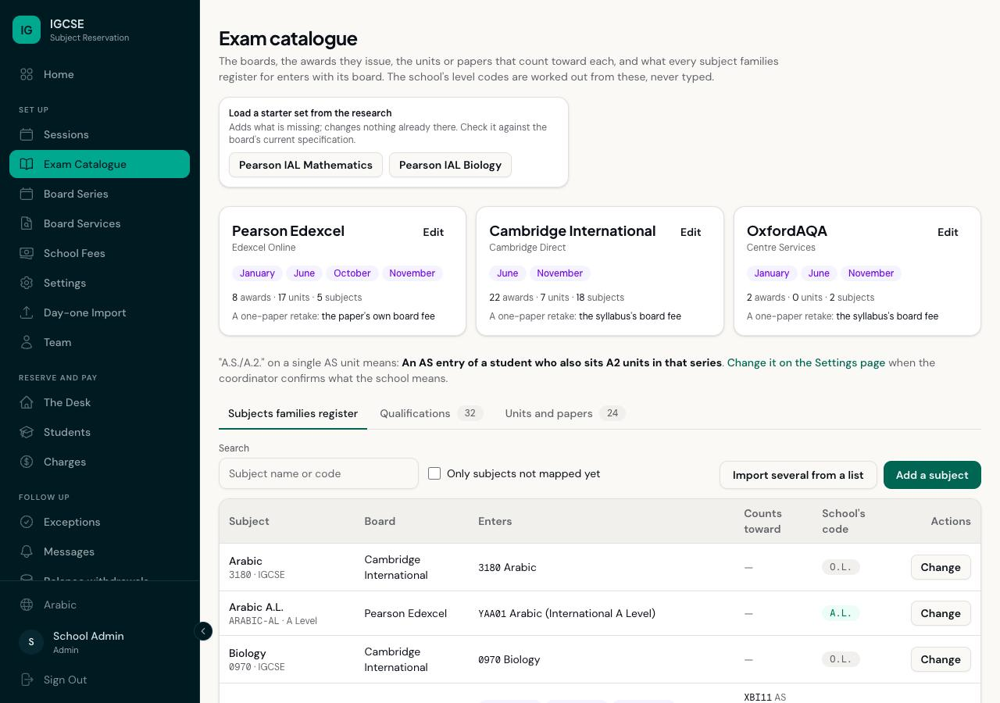
6. The settings the forms set
This checks the two rules the forms state for the whole session: what self study costs and the June refund policy. A new June session copies the refund policy when it is made in the next chapter, so check it first.
6.1Self study: 50% of the course fee
Where you are: Settings, the group Prices.
Scroll to Prices (or click it in ON THIS PAGE).
- Self-study: share of the course fee: 50% — the forms' "Self Study 50% School fees".
- Self-study: share of the board fee: 100% — the forms halve the school's fee only; the board's fee is paid in full.
Both are already so: nothing to change.
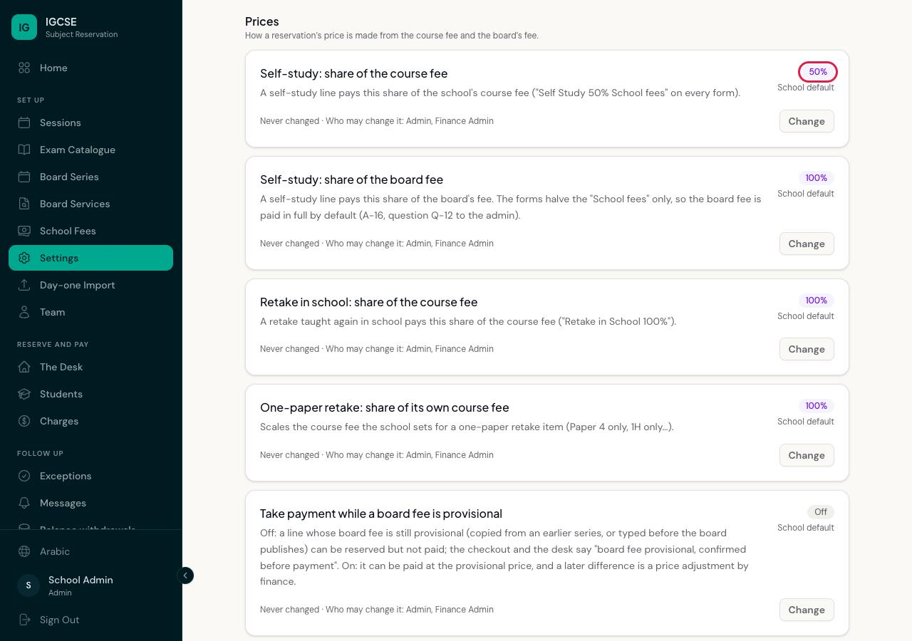
6.2The June refund policy
Where you are: Settings, the group Refunds.
Refund policy of a new June session reads 100% to week 2 · 50% in week 3 · 0% from week 4, counted from the first lesson — the June forms' policy. Nothing to change. The first lesson is the session's Course starts date (step 7.2).
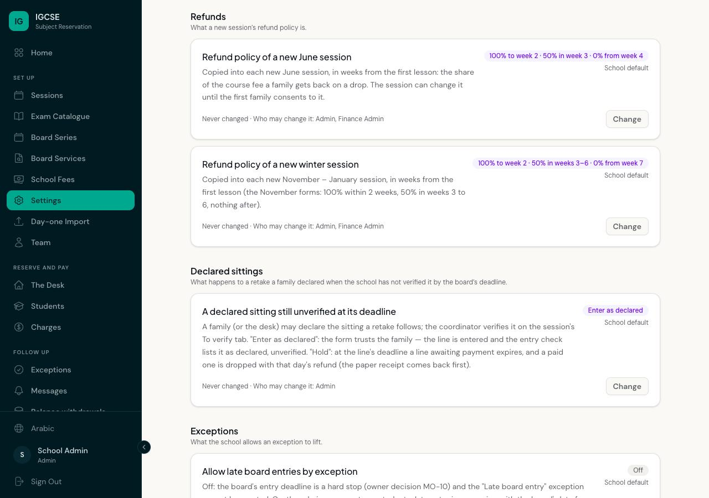
7. The June 2027 session
This makes the session itself: its name, the days families may reserve, the first lesson, the payment date and its refund policy. The next chapter fills its sheet, subject by subject.
7.1New session
Where you are: Sessions in the left column.
Click Sessions: No sessions yet. Click New session.
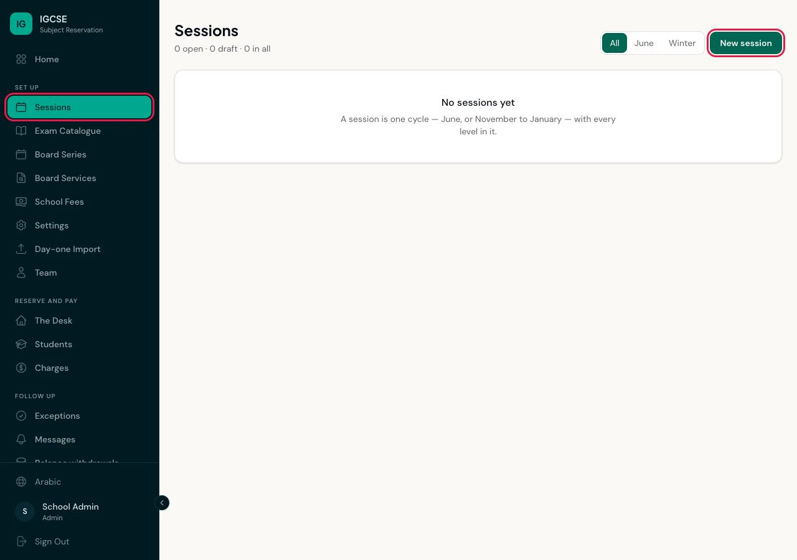
7.2The dates
Where you are: the window New session.
- Type: June. June of:
2027. The grey box says It will be called June 2027. and its refunds. - Reserve from: the day and hour families may start reserving.
- Reserve to: the last day and hour families may reserve (before the boards' entry deadlines).
- Course starts: the first lesson. The refund weeks count from it.
- Payment due: when families must have paid.
- Copy from: Start empty.
- Click Create session.
Choose a Reserve from day after the day you expect to finish this guide. A session whose reserving starts today or earlier opens to families at once — before its sheet is ready. Until that day it stays a draft, and when you are ready you can open it earlier yourself (step 14.2). If the Reserve from day comes before you have finished, the session opens by itself that day: move the day later first, with Edit at the top of the session (while it is a draft). The other dates can be changed with Edit at any time.
You see: the Session screen of June 2027 (next step).
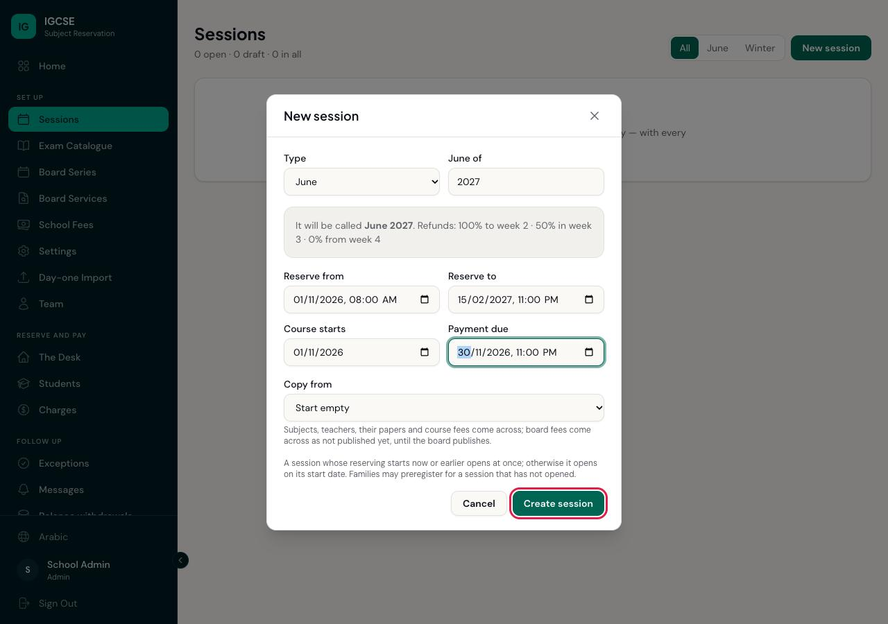
7.3The Session screen
Where you are: Sessions → June 2027.
This screen is where the rest of the guide happens. At the top: the name, Draft, the dates and the refunds, and the buttons Edit, Open now, Correct the sitting and Delete this draft. Under them the Deadlines line, which says No sittings yet: a subject's sitting is added with the subject. Then the tabs Subjects, Fees, Money, Grade 10 and To verify. The Subjects tab is the links sheet; today it says No subjects on this sheet yet.
To come back to it later: Sessions in the left column, then June 2027 (or its Open).
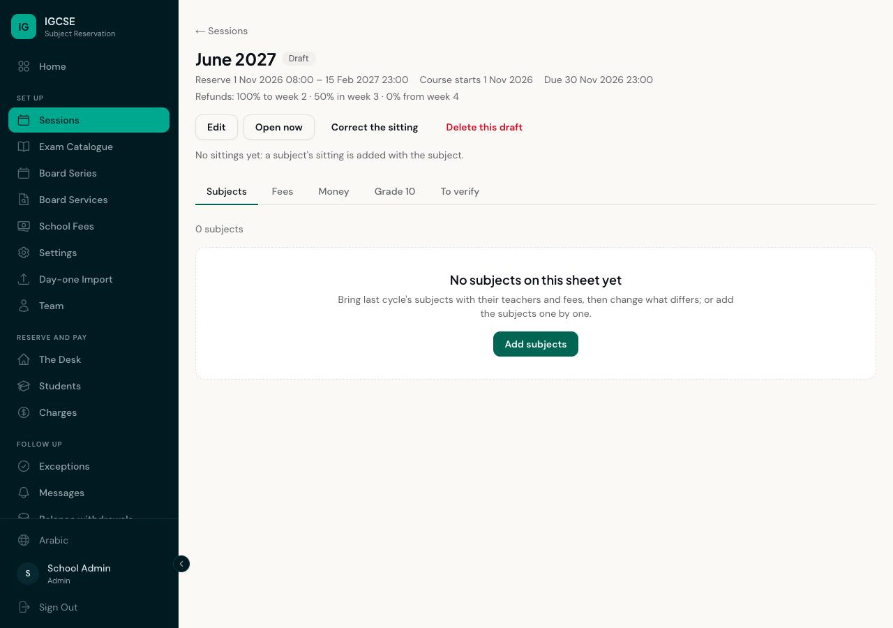
8. The sheet: the 25 forms, one subject each
This turns each of the 25 forms into one row of the session's sheet: its teachers, how it is offered, its course fee and its papers, components or units, in the form's words. Families see exactly these choices, and the board fees of the next chapter are added to the rows made here.
8.1Add a subject
Where you are: Sessions → June 2027, the tab Subjects.
- Click Add subjects (once the sheet has one, the button is Add subject, top right).
- In Subject, type the subject's code or name.
- Click the subject. Its form opens on the right.
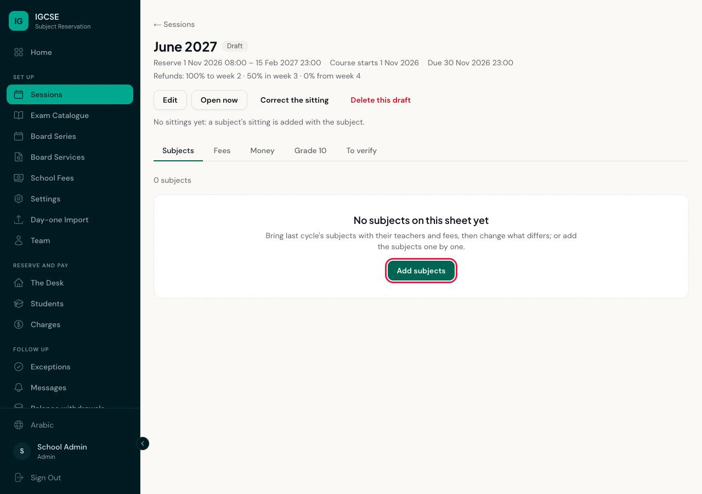
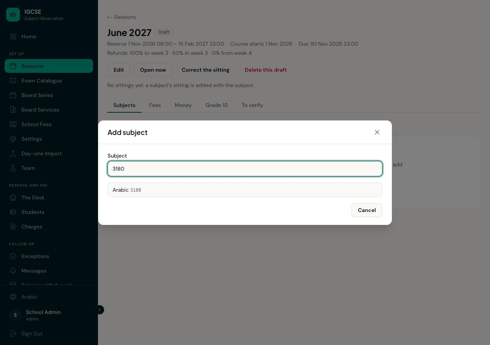
8.2The subject's form, part by part
Where you are: the subject's form, on the right of the Session screen.
Every subject's form has the same parts, in the order of a Google Form:
- Teachers this cycle: the subject's teachers from chapter 4. Tick each one who teaches it this cycle. Beside a ticked teacher, tick online only if that teacher teaches online. Show every teacher lists everyone on the system. An external team: an outside team by the name the links sheet gives, then Add.
- Offered as: First entry and retakes for every June 2027 form (a first entry, a retake in school and a retake in self study). The other choices are for a subject offered to re-sitters only (Retakes only, Retake (Self Study ONLY)); no June 2027 form is.
- Course fee: the school's course fee, with the self-study half beside it.
- Then Add subject. Once added, the form shows what the Catalogue gave the subject: One paper only, Components, Units or Qualifications. Set them and click Save. Each of those lines has its own course fee box at its end, showing the subject's fee in grey: leave it empty to use the subject's fee, or type that line's own fee (an A.L. often costs more than an A.S.).
- An O.L. subject with no paper of its own shows, once added, The Catalogue gives this subject no papers yet. and Set this subject's papers on the Catalogue. For such a subject that is right: there is nothing to do.
- Grade 10 core, Course starts (if not the session's) and Notes: leave them.
The form closes with the cross at its top right, or the Esc key. Click a subject's name on the sheet to open its form again.
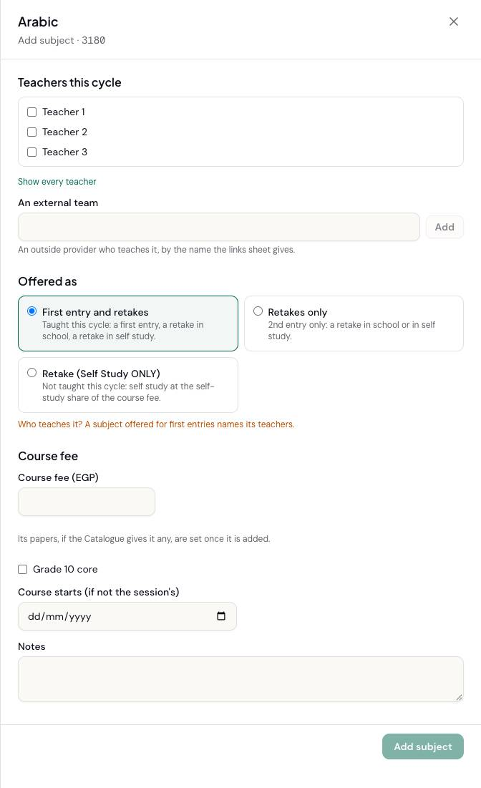
8.3Arabic O.L. (Cambridge)
Where you are: Sessions → June 2027, Subjects.
- Click Add subject, type
3180and click Arabic in the list. - Teachers this cycle: tick the three teachers your Arabic O.L. form names (T1, T2, T3 on the form).
- Offered as: First entry and retakes.
- Course fee (EGP): the course fee the school charges for Arabic O.L. this cycle. Beside it the screen shows Self Study 50% School fees: and half that fee.
- Click Add subject. The form stays open and shows what comes next.
- One paper only, the line Paper 1 only
(3180/01): choose Retake in school or self study. In the box beside it, the school's course fee for one paper. Left empty, a one-paper retake costs the whole subject's course fee; the self-study share applies to it. - One paper only, the line Paper 2 only
(3180/02): choose Retake in school or self study. In the box beside it, the school's course fee for one paper. Left empty, a one-paper retake costs the whole subject's course fee; the self-study share applies to it. - Click Save.
Every option of the form has its place: the first three are First entry and retakes; the two "(One paper ONLY)" options are Paper 1 and Paper 2 "in school or self study" (the form does not ask which paper; the family chooses Paper 1 or Paper 2 here). The teacher list's "Self study" is the retake in self study. The form's "From June 2026 / From November 2026" is asked of the family on its Reserve page: a one-paper retake asks "Carried from the sitting…", whose list also holds the board's earlier sittings, and the school verifies the one chosen; "None" is simply not ticking it.
You see: Added. at the top of the form (after Save, Saved.); on the sheet, the row Arabic under O.L. with its teachers and its entry options in the forms' words; Board fee not set until chapter 9.
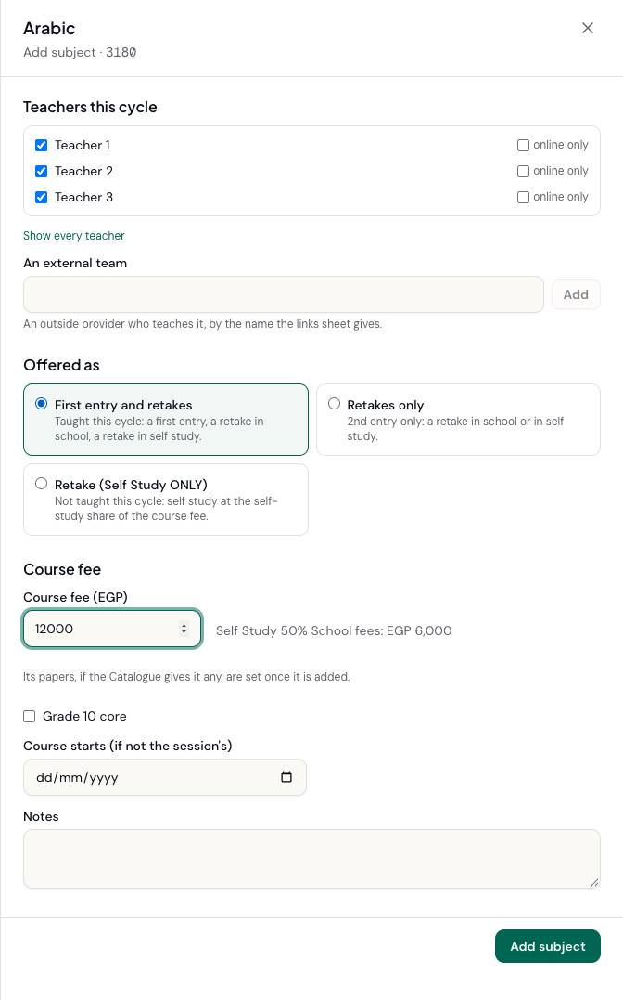
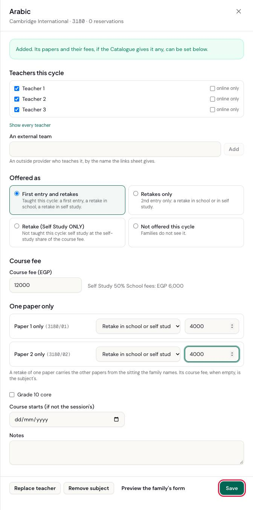
8.4Biology O.L. (Cambridge)
Where you are: Sessions → June 2027, Subjects.
- Click Add subject, type
0970and click Biology in the list. - Teachers this cycle: tick the three teachers your Biology O.L. form names (T1, T2, T3 on the form).
- Offered as: First entry and retakes.
- Course fee (EGP): the course fee the school charges for Biology O.L. this cycle. Beside it the screen shows Self Study 50% School fees: and half that fee.
- Click Add subject. The form stays open and shows what comes next.
- One paper only, the line Paper 41/42 only
(0970/41): choose Retake self study only. In the box beside it, the school's course fee for one paper. Left empty, a one-paper retake costs the whole subject's course fee; the self-study share applies to it. - Click Save.
"Retake Self Study 50% fees (All Papers)" Yes / No is the whole-subject retake in self study that First entry and retakes offers. "(Paper 41/42 ONLY)" is the paper you added in chapter 5, offered in self study only, as the form says. The form's "From June 2026 / From November 2026" is asked of the family on its Reserve page: a one-paper retake asks "Carried from the sitting…", whose list also holds the board's earlier sittings, and the school verifies the one chosen; "None" is simply not ticking it.
You see: Added. at the top of the form (after Save, Saved.); on the sheet, the row Biology under O.L. with its teachers and its entry options in the forms' words; Board fee not set until chapter 9.
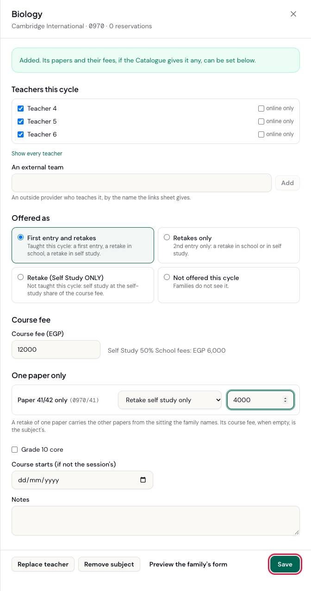
8.5Business O.L. (Cambridge)
Where you are: Sessions → June 2027, Subjects.
- Click Add subject, type
0986and click Business in the list. - Teachers this cycle: the teacher named in your Business O.L. form's description comes already ticked, since the subject has only one teacher. Leave it ticked.
- Offered as: First entry and retakes.
- Course fee (EGP): the course fee the school charges for Business O.L. this cycle. Beside it the screen shows Self Study 50% School fees: and half that fee.
- Click Add subject.
The form's "Self Study 50% fees (ONLY 2nd entry)" Yes / No is the retake in self study that First entry and retakes already offers: nothing more to set. After Add subject, under One paper only, the form shows The Catalogue gives this subject no papers yet. That is right for Business, which has no one-paper retake: nothing to do. The same holds for the nine other O.L. subjects without a paper.
You see: Added. at the top of the form; on the sheet, the row Business under O.L. with its teachers and its entry options in the forms' words; Board fee not set until chapter 9.
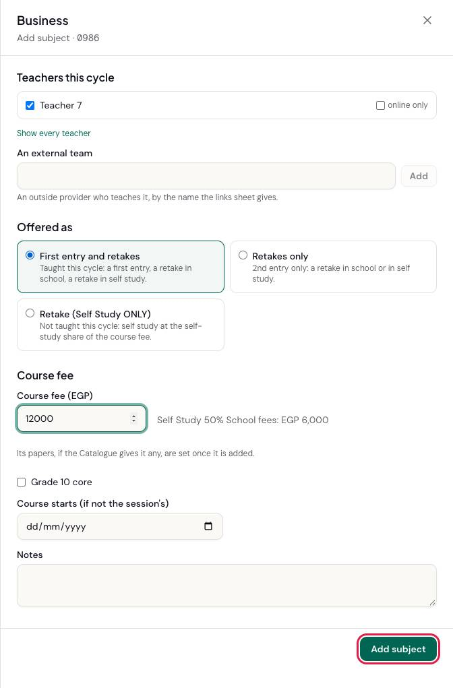
8.6Chemistry O.L. (Cambridge)
Where you are: Sessions → June 2027, Subjects.
- Click Add subject, type
0971and click Chemistry in the list. - Teachers this cycle: tick the three teachers your Chemistry O.L. form names (T1, T2, T3 on the form).
- Offered as: First entry and retakes.
- Course fee (EGP): the course fee the school charges for Chemistry O.L. this cycle. Beside it the screen shows Self Study 50% School fees: and half that fee.
- Click Add subject. The form stays open and shows what comes next.
- One paper only, the line Paper 41/42 only
(0971/41): choose Retake self study only. In the box beside it, the school's course fee for one paper. Left empty, a one-paper retake costs the whole subject's course fee; the self-study share applies to it. - Click Save.
"Retake Self Study 50% fees (All Papers)" Yes / No is the whole-subject retake in self study that First entry and retakes offers. Paper 41/42 in self study only, as the form says. The form's "From June 2026 / From November 2026" is asked of the family on its Reserve page: a one-paper retake asks "Carried from the sitting…", whose list also holds the board's earlier sittings, and the school verifies the one chosen; "None" is simply not ticking it.
You see: Added. at the top of the form (after Save, Saved.); on the sheet, the row Chemistry under O.L. with its teachers and its entry options in the forms' words; Board fee not set until chapter 9.
8.7Combined Science O.L. (Cambridge)
Where you are: Sessions → June 2027, Subjects.
- Click Add subject, type
0653and click Combined Science in the list. - Teachers this cycle: the teacher named in your Combined Science O.L. form's description comes already ticked, since the subject has only one teacher. Leave it ticked.
- Offered as: First entry and retakes.
- Course fee (EGP): the course fee the school charges for Combined Science O.L. this cycle. Beside it the screen shows Self Study 50% School fees: and half that fee.
- Click Add subject. The form stays open and shows what comes next.
- One paper only, the line Paper 41/42 only
(0653/41): choose Retake self study only. In the box beside it, the school's course fee for one paper. Left empty, a one-paper retake costs the whole subject's course fee; the self-study share applies to it. - Click Save.
"Retake Self Study 50% fees (All Papers)" Yes / No is the whole-subject retake in self study that First entry and retakes offers. Paper 41/42 in self study only. The form's "From June 2026 / From November 2026" is asked of the family on its Reserve page: a one-paper retake asks "Carried from the sitting…", whose list also holds the board's earlier sittings, and the school verifies the one chosen; "None" is simply not ticking it.
You see: Added. at the top of the form (after Save, Saved.); on the sheet, the row Combined Science under O.L. with its teachers and its entry options in the forms' words; Board fee not set until chapter 9.
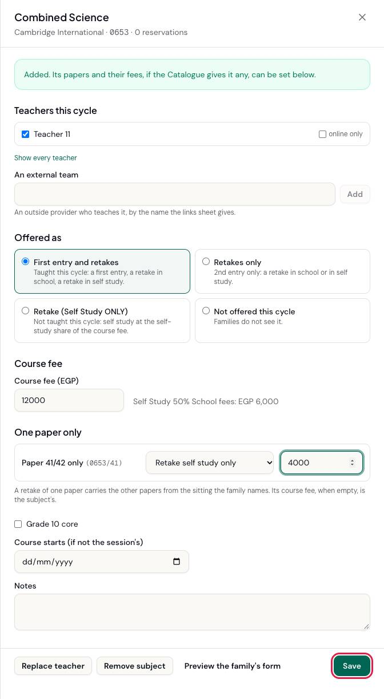
8.8Computer Science O.L. (Cambridge; an external team)
Where you are: Sessions → June 2027, Subjects.
- Click Add subject, type
0984and click Computer Science in the list. - An external team: type the team's name as the links sheet gives it, click Add. It appears under the list, marked External team. Leave the teachers in the list above it unticked: since no teacher was given to this subject in chapter 4, the list shows everyone. (In the picture, the team is External Team.)
- Offered as: First entry and retakes.
- Course fee (EGP): the course fee the school charges for Computer Science O.L. this cycle. Beside it the screen shows Self Study 50% School fees: and half that fee.
- Click Add subject.
"Retake Self Study 50% fees (All Papers)" Yes / No is the whole-subject retake in self study that First entry and retakes offers.
The form's "Paper 41/42" question has nothing to set. It was left from last year's form: its options name the 2025 sittings, and Computer Science 0984 has no Paper 4. Offer no one-paper retake for it. If the school does take a one-paper retake of Computer Science, ask the coordinator which paper, add it on Units and papers and tick it in the 0984 award's Edit units (chapter 5); it then appears here under One paper only.
You see: Added. at the top of the form; on the sheet, the row Computer Science under O.L. with its teachers and its entry options in the forms' words; Board fee not set until chapter 9.
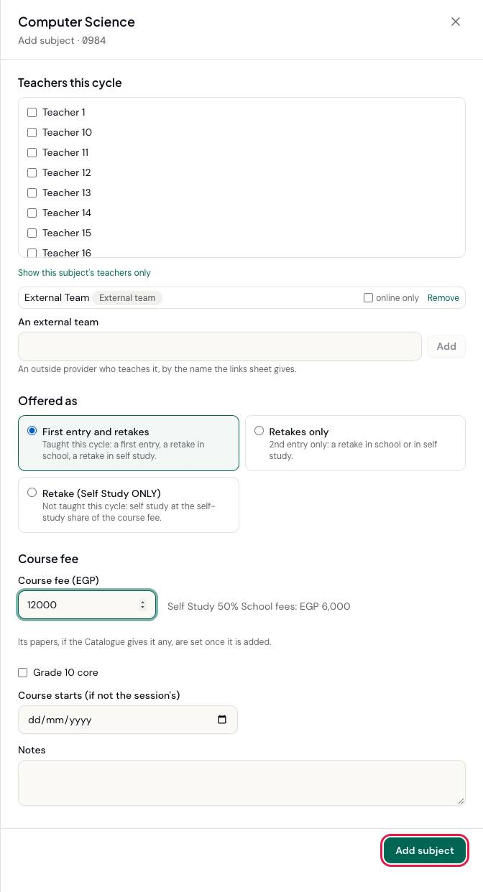
8.9English As a Second Language (Oxford)
Where you are: Sessions → June 2027, Subjects.
- Click Add subject, type
ESL-OXFORDand click English as a Second Language in the list. - Teachers this cycle: tick the two teachers your English As a Second Language form names (T1 (Oxford), T2 (Oxford) on the form).
- Offered as: First entry and retakes.
- Course fee (EGP): the course fee the school charges for English as a Second Language O.L. this cycle. Beside it the screen shows Self Study 50% School fees: and half that fee.
- Click Add subject.
The form's "Self Study 50% fees (ONLY 2nd entry)" Yes / No is the retake in self study that First entry and retakes already offers: nothing more to set. The form's title carries no session; it is this June 2027 sheet's.
You see: Added. at the top of the form; on the sheet, the row English as a Second Language under O.L. with its teachers and its entry options in the forms' words; Board fee not set until chapter 9.
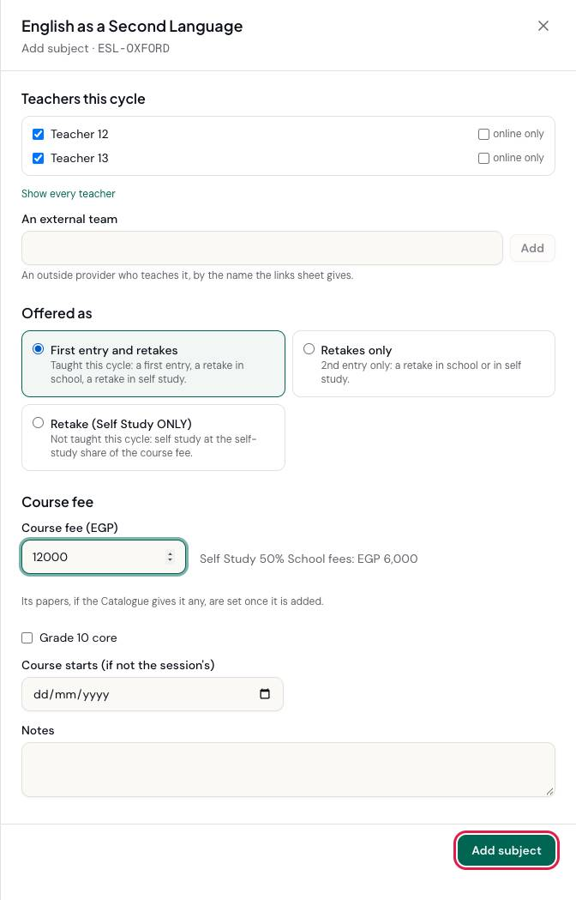
8.10Environmental Management O.L. (Cambridge)
Where you are: Sessions → June 2027, Subjects.
- Click Add subject, type
0680and click Environmental Management in the list. - Teachers this cycle: the teacher named in your Environmental Management O.L. form's description comes already ticked, since the subject has only one teacher. Leave it ticked.
- Offered as: First entry and retakes.
- Course fee (EGP): the course fee the school charges for Environmental Management O.L. this cycle. Beside it the screen shows Self Study 50% School fees: and half that fee.
- Click Add subject.
The form's "Self Study 50% fees (ONLY 2nd entry)" Yes / No is the retake in self study that First entry and retakes already offers: nothing more to set.
You see: Added. at the top of the form; on the sheet, the row Environmental Management under O.L. with its teachers and its entry options in the forms' words; Board fee not set until chapter 9.
8.11French O.L. (Cambridge)
Where you are: Sessions → June 2027, Subjects.
- Click Add subject, type
7156and click French in the list. - Teachers this cycle: the teacher named in your French O.L. form's description comes already ticked, since the subject has only one teacher. Leave it ticked.
- Offered as: First entry and retakes.
- Course fee (EGP): the course fee the school charges for French O.L. this cycle. Beside it the screen shows Self Study 50% School fees: and half that fee.
- Click Add subject.
The form's "Self Study 50% fees (ONLY 2nd entry)" Yes / No is the retake in self study that First entry and retakes already offers: nothing more to set.
You see: Added. at the top of the form; on the sheet, the row French under O.L. with its teachers and its entry options in the forms' words; Board fee not set until chapter 9.
8.12German O.L. (Cambridge)
Where you are: Sessions → June 2027, Subjects.
- Click Add subject, type
7159and click German in the list. - Teachers this cycle: the teacher named in your German O.L. form's description comes already ticked, since the subject has only one teacher. Leave it ticked.
- Offered as: First entry and retakes.
- Course fee (EGP): the course fee the school charges for German O.L. this cycle. Beside it the screen shows Self Study 50% School fees: and half that fee.
- Click Add subject.
The form's "Self Study 50% fees (ONLY 2nd entry)" Yes / No is the retake in self study that First entry and retakes already offers: nothing more to set.
You see: Added. at the top of the form; on the sheet, the row German under O.L. with its teachers and its entry options in the forms' words; Board fee not set until chapter 9.
8.13Global Perspectives O.L. (Cambridge)
Where you are: Sessions → June 2027, Subjects.
- Click Add subject, type
0457and click Global Perspectives in the list. - Teachers this cycle: the teacher named in your Global Perspectives O.L. form's description comes already ticked, since the subject has only one teacher. Leave it ticked.
- Beside the teacher, tick online only: families see "(online)" after the teacher's name.
- Offered as: First entry and retakes.
- Course fee (EGP): the course fee the school charges for Global Perspectives O.L. this cycle. Beside it the screen shows Self Study 50% School fees: and half that fee.
- Click Add subject.
The form's "Self Study 50% fees (ONLY 2nd entry)" Yes / No is the retake in self study that First entry and retakes already offers: nothing more to set.
You see: Added. at the top of the form; on the sheet, the row Global Perspectives under O.L. with its teachers and its entry options in the forms' words; Board fee not set until chapter 9.
8.14Global Citizenship O.L. (Cambridge)
Where you are: Sessions → June 2027, Subjects.
- Click Add subject, type
GLOBAL-CITand click Global Citizenship in the list. - Teachers this cycle: the teacher named in your Global Citizenship O.L. form's description comes already ticked, since the subject has only one teacher. Leave it ticked.
- Offered as: First entry and retakes.
- Course fee (EGP): the course fee the school charges for Global Citizenship O.L. this cycle. Beside it the screen shows Self Study 50% School fees: and half that fee.
- Click Add subject.
The form's "Self Study 50% fees (ONLY 2nd entry)" Yes / No is the retake in self study that First entry and retakes already offers: nothing more to set. The form shows the refund box without the policy's text; on its Reserve page every family reads the session's policy before it reserves (chapter 13).
You see: Added. at the top of the form; on the sheet, the row Global Citizenship under O.L. with its teachers and its entry options in the forms' words; Board fee not set until chapter 9.
8.15Human Biology O.L. (Edexcel GCSE)
Where you are: Sessions → June 2027, Subjects.
- Click Add subject, type
4HB1and click Human Biology in the list. - Teachers this cycle: the teacher named in your Human Biology O.L. form's description comes already ticked, since the subject has only one teacher. Leave it ticked.
- Offered as: First entry and retakes.
- Course fee (EGP): the course fee the school charges for Human Biology O.L. this cycle. Beside it the screen shows Self Study 50% School fees: and half that fee.
- Click Add subject.
The form's "Self Study 50% fees (ONLY 2nd entry)" Yes / No is the retake in self study that First entry and retakes already offers: nothing more to set.
You see: Added. at the top of the form; on the sheet, the row Human Biology under O.L. with its teachers and its entry options in the forms' words; Board fee not set until chapter 9.
8.16ICT O.L. (Cambridge; an external team)
Where you are: Sessions → June 2027, Subjects.
- Click Add subject, type
0983and click ICT in the list. - Teachers this cycle: the team you named for Computer Science O.L. is now in the list, marked External team: tick it. (The list shows every teacher, since no teacher was given to this subject in chapter 4.) If a different team teaches it, type that team's name under An external team and click Add instead.
- Offered as: First entry and retakes.
- Course fee (EGP): the course fee the school charges for ICT O.L. this cycle. Beside it the screen shows Self Study 50% School fees: and half that fee.
- Click Add subject. The form stays open and shows what comes next.
- One paper only, the line Theory Paper only
(0983/01): choose Retake self study only. In the box beside it, the school's course fee for one paper. Left empty, a one-paper retake costs the whole subject's course fee; the self-study share applies to it. - Click Save.
"Retake Self Study 50% fees (All Papers)" Yes / No is the whole-subject retake in self study that First entry and retakes offers. The "Theory Paper ONLY" retake is the paper 0983/01, in self study only. The form's "From June 2026 / From November 2026" is asked of the family on its Reserve page: a one-paper retake asks "Carried from the sitting…", whose list also holds the board's earlier sittings, and the school verifies the one chosen; "None" is simply not ticking it.
You see: Added. at the top of the form (after Save, Saved.); on the sheet, the row ICT under O.L. with its teachers and its entry options in the forms' words; Board fee not set until chapter 9.
8.17Mathematics O.L. (Edexcel GCSE)
Where you are: Sessions → June 2027, Subjects.
- Click Add subject, type
4MA1and click Mathematics in the list. - Teachers this cycle: tick the three teachers your Mathematics O.L. form names (T1, T2, T3 on the form).
- Offered as: First entry and retakes.
- Course fee (EGP): the course fee the school charges for Mathematics O.L. this cycle. Beside it the screen shows Self Study 50% School fees: and half that fee.
- Click Add subject. The form stays open and shows what comes next.
- One paper only, the line 1H only
(4MA1/1H): choose Retake self study only. In the box beside it, the school's course fee for one paper. Left empty, a one-paper retake costs the whole subject's course fee; the self-study share applies to it. - One paper only, the line 2H only
(4MA1/2H): choose Retake self study only. In the box beside it, the school's course fee for one paper. Left empty, a one-paper retake costs the whole subject's course fee; the self-study share applies to it. - Click Save.
"Retake Self Study 50% fees (All Papers)" Yes / No is the whole-subject retake in self study that First entry and retakes offers. "(One Paper ONLY): 1H / 2H / None" are the two papers, each in self study only; "None" is not ticking them. Here the form names the paper; the family's Reserve page also asks which sitting the other paper comes from, and the school verifies it.
You see: Added. at the top of the form (after Save, Saved.); on the sheet, the row Mathematics under O.L. with its teachers and its entry options in the forms' words; Board fee not set until chapter 9.
8.18Physics O.L. (Cambridge)
Where you are: Sessions → June 2027, Subjects.
- Click Add subject, type
0972and click Physics in the list. - Teachers this cycle: the teacher your form names (T1 on the form) comes already ticked, since the subject has only one teacher. Leave it ticked.
- Offered as: First entry and retakes.
- Course fee (EGP): the course fee the school charges for Physics O.L. this cycle. Beside it the screen shows Self Study 50% School fees: and half that fee.
- Click Add subject. The form stays open and shows what comes next.
- One paper only, the line Paper 41/42 only
(0972/41): choose Retake self study only. In the box beside it, the school's course fee for one paper. Left empty, a one-paper retake costs the whole subject's course fee; the self-study share applies to it. - Click Save.
"Retake Self Study 50% fees (All Papers)" Yes / No is the whole-subject retake in self study that First entry and retakes offers. Paper 41/42 in self study only. The form's "From June 2026 / From November 2026" is asked of the family on its Reserve page: a one-paper retake asks "Carried from the sitting…", whose list also holds the board's earlier sittings, and the school verifies the one chosen; "None" is simply not ticking it.
You see: Added. at the top of the form (after Save, Saved.); on the sheet, the row Physics under O.L. with its teachers and its entry options in the forms' words; Board fee not set until chapter 9.
8.19Psychology O.L. (Oxford)
Where you are: Sessions → June 2027, Subjects.
- Click Add subject, type
PSY-OXFORDand click Psychology in the list. - Teachers this cycle: the teacher named in your Psychology O.L. form's description comes already ticked, since the subject has only one teacher. Leave it ticked.
- Offered as: First entry and retakes.
- Course fee (EGP): the course fee the school charges for Psychology O.L. this cycle. Beside it the screen shows Self Study 50% School fees: and half that fee.
- Click Add subject.
The form's "Self Study 50% fees (ONLY 2nd entry)" Yes / No is the retake in self study that First entry and retakes already offers: nothing more to set.
You see: Added. at the top of the form; on the sheet, the row Psychology under O.L. with its teachers and its entry options in the forms' words; Board fee not set until chapter 9.
8.20Arabic A.L. (Edexcel)
Where you are: Sessions → June 2027, Subjects.
- Click Add subject, type
ARABIC-ALand click Arabic A.L. in the list. - Teachers this cycle: tick only the IAL teacher (T1 on the form, "(Edexcel YAA01)"). Leave the GCE teacher unticked: that teacher is added with the GCE qualification once the subject is added.
- Offered as: First entry and retakes.
- Course fee (EGP): the course fee the school charges for Arabic A.L. this cycle. Beside it the screen shows Self Study 50% School fees: and half that fee.
- Click Add subject. The form stays open and shows what comes next.
The form's "Self Study 50% fees (ONLY 2nd entry)" Yes / No is the retake in self study that First entry and retakes already offers: nothing more to set. The second teacher and the GCE qualification are the next step.
You see: Added. at the top of the form; on the sheet, the row Arabic A.L. under A.S. / A.L. with its teachers and its entry options in the forms' words; Board fee not set until chapter 9.
8.21Arabic A.L.: its second qualification, with its teacher
Where you are: the form of Arabic A.L., still open.
The form
chooses the qualification through the teacher: T1 teaches the International A Level (YAA01), T2 the GCE A Level (9AA01 on the form,
9AA0 on the system).
- Under Another qualification, click Add a qualification: Edexcel 9AA0 (Arabic (GCE A Level)).
- Under Its teacher (the family chooses the qualification with the teacher), click Show every teacher and tick the GCE teacher (T2 on the form).
- Its course fee (EGP): leave it empty (the subject's), or type the school's fee for the GCE if it differs.
- Click Add the qualification.
You see: Added Edexcel 9AA0. and, under Qualifications, both: Arabic (International A Level) (YAA01) and Arabic (GCE A Level) (9AA0), the GCE with its teacher ticked. The family's form then reads "T1 (Edexcel YAA01)" and "T2 (Edexcel 9AA0)" (step 13.3).
8.22Biology A.S./A.L. (Edexcel IAL)
Where you are: Sessions → June 2027, Subjects.
- Click Add subject, type
IAL-BIOLOGYand click Biology A.S./A.L. in the list. - Teachers this cycle: the teacher named in your Biology A.S./A.L. form's description comes already ticked, since the subject has only one teacher. Leave it ticked.
- Offered as: First entry and retakes.
- Course fee (EGP): the course fee the school charges for one unit of Biology A.S./A.L. this cycle. Beside it the screen shows Self Study 50% School fees: and half that fee.
- Click Add subject. The form stays open and shows what comes next.
- Units, Unit 1
(WBI11): Self study only. - Units, Unit 2
(WBI12): Self study only. - Units, Unit 3
(WBI13): Self study only. - Units, Unit 4
(WBI14): Self study only. - Units, Unit 5
(WBI15): Taught by. Its teacher is the subject's (T1): leave Its teachers (none ticked: the subject's) as it is, or tick that teacher. - Units, Unit 6
(WBI16): Taught by. Its teacher is the subject's (T1): leave Its teachers (none ticked: the subject's) as it is, or tick that teacher. - Click Save.
In June only Units 5 and 6 are taught; the four others (and 5 and 6 again) are self-study retakes. Taught by offers a unit for a first entry, a retake in school and a retake in self study (so Units 5 and 6 also offer a retake in school, which the form does not list; if a family chooses it, the desk can turn it down); Self study only offers it in self study only. Each unit is reserved and priced on its own, so the course fee is for one unit.
You see: Added. at the top of the form (after Save, Saved.); on the sheet, the row Biology A.S./A.L. under A.S. / A.L. with its teachers and its entry options in the forms' words; Board fee not set until chapter 9.
8.23Chemistry A.S. (Cambridge)
Where you are: Sessions → June 2027, Subjects.
- Click Add subject, type
CHEM-ASand click Chemistry A.S. in the list. - Teachers this cycle: the teacher named in your Chemistry A.S. form's description comes already ticked, since the subject has only one teacher. Leave it ticked.
- Offered as: First entry and retakes.
- Course fee (EGP): the course fee the school charges for Chemistry A.S. this cycle. Beside it the screen shows Self Study 50% School fees: and half that fee.
- Click Add subject. The form stays open and shows what comes next.
- Components, A.S.: Offered.
- Components, A.2. (carry forward on an earlier June or November): Not offered this cycle.
- Components, A.L.: Offered.
- Click Save.
The form offers A.S. or the full A level in one sitting, not A.2.: so A.2. (carry forward on an earlier June or November) is not offered this cycle. The form's "Self Study (ONLY 2nd entry)" Yes / No is the retake in self study that First entry and retakes already offers: nothing more to set.
You see: Added. at the top of the form (after Save, Saved.); on the sheet, the row Chemistry A.S. under A.S. / A.L. with its teachers and its entry options in the forms' words; Board fee not set until chapter 9.
8.24Computer Science A.S./A.L. (Cambridge)
Where you are: Sessions → June 2027, Subjects.
- Click Add subject, type
CS-ASALand click Computer Science A.S./A.L. in the list. - Teachers this cycle: the team you named for Computer Science O.L. is now in the list, marked External team: tick it. (The list shows every teacher, since no teacher was given to this subject in chapter 4.) If a different team teaches it, type that team's name under An external team and click Add instead.
- Offered as: First entry and retakes.
- Course fee (EGP): the course fee the school charges for Computer Science A.S./A.L. this cycle. Beside it the screen shows Self Study 50% School fees: and half that fee.
- Click Add subject. The form stays open and shows what comes next.
- Components, A.S.: Offered.
- Components, A.2. (carry forward on an earlier June or November): Offered.
- Components, A.L.: Offered.
- Click Save.
All three routes are offered. The form's two A.2. options, "Carry forward on June" and "Carry forward on November", are one route here: the family names the sitting its A.S. result comes from, and the school verifies it. The form's "Self Study (ONLY 2nd entry)" Yes / No is the retake in self study that First entry and retakes already offers: nothing more to set.
You see: Added. at the top of the form (after Save, Saved.); on the sheet, the row Computer Science A.S./A.L. under A.S. / A.L. with its teachers and its entry options in the forms' words; Board fee not set until chapter 9.
8.25French A.S./A.L. (Cambridge)
Where you are: Sessions → June 2027, Subjects.
- Click Add subject, type
FRENCH-ASALand click French A.S./A.L. in the list. - Teachers this cycle: the teacher named in your French A.S./A.L. form's description comes already ticked, since the subject has only one teacher. Leave it ticked.
- Offered as: First entry and retakes.
- Course fee (EGP): the course fee the school charges for French A.S./A.L. this cycle. Beside it the screen shows Self Study 50% School fees: and half that fee.
- Click Add subject. The form stays open and shows what comes next.
- Components, A.S.: Offered.
- Components, A.L.: Offered.
- Click Save.
French has no A.2. route (you gave it no A.2. option in chapter 5): only A.S. and A.L. appear. The form's "Self Study (ONLY 2nd entry)" Yes / No is the retake in self study that First entry and retakes already offers: nothing more to set.
You see: Added. at the top of the form (after Save, Saved.); on the sheet, the row French A.S./A.L. under A.S. / A.L. with its teachers and its entry options in the forms' words; Board fee not set until chapter 9.
8.26Mathematics A.S./A.L. (Edexcel IAL)
Where you are: Sessions → June 2027, Subjects.
- Click Add subject, type
IAL-MATHSand click Mathematics A.S./A.L. in the list. - Teachers this cycle: tick both teachers the form names (T1 and T2). Each unit gets its own below.
- Offered as: First entry and retakes.
- Course fee (EGP): the course fee the school charges for one unit of Mathematics A.S./A.L. this cycle. Beside it the screen shows Self Study 50% School fees: and half that fee.
- Click Add subject. The form stays open and shows what comes next.
- Units, P1
(WMA11): Taught by. Under Its teachers (none ticked: the subject's), tick T1 and online only beside T1. - Units, P2
(WMA12): Taught by. Under Its teachers (none ticked: the subject's), tick T1 and online only beside T1. - Units, P3
(WMA13): Taught by. Under Its teachers (none ticked: the subject's), tick T1. - Units, P4
(WMA14): Taught by. Under Its teachers (none ticked: the subject's), tick T1. - Units, M1
(WME01): Taught by. Under Its teachers (none ticked: the subject's), tick both T2 and T1. - Units, S1
(WST01): Taught by. Under Its teachers (none ticked: the subject's), tick both T2 and T1. - Click Save.
Each unit has its own teachers, as the form asks unit by unit: P1 and P2 by T1 online only, P3 and P4 by T1, M1 and S1 by T2 or T1 (the family chooses). A unit left with none ticked is taught by the subject's teachers. Each unit is reserved and priced on its own, so the course fee is for one unit. Every unit is also offered as a self-study retake, the form's "Self Study 50% School fees (2nd entry ONLY)".
You see: Added. at the top of the form (after Save, Saved.); on the sheet, the row Mathematics A.S./A.L. under A.S. / A.L. with its teachers and its entry options in the forms' words; Board fee not set until chapter 9.
8.27Physics A.S./A.L. (Cambridge)
Where you are: Sessions → June 2027, Subjects.
- Click Add subject, type
PHYS-ASALand click Physics A.S./A.L. in the list. - Teachers this cycle: the teacher your form names (T1 on the form, inside the A.S. option) comes already ticked, since the subject has only one teacher. Leave it ticked.
- Offered as: First entry and retakes.
- Course fee (EGP): the course fee the school charges for Physics A.S./A.L. this cycle. Beside it the screen shows Self Study 50% School fees: and half that fee.
- Click Add subject. The form stays open and shows what comes next.
- Components, A.S.: Offered.
- Components, A.2. (carry forward on an earlier June or November): Self study only.
- Components, A.L.: Not offered this cycle.
- Click Save.
A.S. is taught by the subject's teacher (T1 on the form). The form's three A.2. options are all the A.2. in self study in June 2027; two of them name the sitting the A.S. result is carried from (June 2026, November 2025), and the second, "Physics A.2. (Self Study 50% fees in June 2027)", names none. This guide reads all three as the one route A.2. (carry forward on an earlier June or November) in self study only: the family names the sitting its A.S. comes from, and the school verifies it. If the school means by that second option an A.2. sat together with the A.S. in June 2027 (the full A level in one year), the coordinator decides; then A.L. is Offered rather than Not offered this cycle. As this guide reads the form, A.L. is not offered. The form's "Self Study (ONLY 2nd entry)" Yes / No is the retake in self study that First entry and retakes already offers: nothing more to set.
You see: Added. at the top of the form (after Save, Saved.); on the sheet, the row Physics A.S./A.L. under A.S. / A.L. with its teachers and its entry options in the forms' words; Board fee not set until chapter 9.
8.28Psychology A.L. (Cambridge)
Where you are: Sessions → June 2027, Subjects.
- Click Add subject, type
PSY-ALand click Psychology A.L. in the list. - Teachers this cycle: the teacher named in your Psychology A.L. form's description comes already ticked, since the subject has only one teacher. Leave it ticked.
- Offered as: First entry and retakes.
- Course fee (EGP): the course fee the school charges for Psychology A.L. this cycle. Beside it the screen shows Self Study 50% School fees: and half that fee.
- Click Add subject.
The form's "Self Study 50% fees (ONLY 2nd entry)" Yes / No is the retake in self study that First entry and retakes already offers: nothing more to set.
You see: Added. at the top of the form; on the sheet, the row Psychology A.L. under A.S. / A.L. with its teachers and its entry options in the forms' words; Board fee not set until chapter 9.
8.29The sheet, all 25
Where you are: Sessions → June 2027, Subjects.
You see: 25 subjects: 17 under O.L. and 8 under A.S. / A.L., each with its teachers, its entry options, its course fee and the self-study half. Each row also says Board fee not set and Dates not set: the next chapters.
9. The boards' fees
This puts each board's own fee beside every row of the sheet, from the boards' lists. A family's price is the course fee you typed plus this board fee, and a subject with no board fee cannot be reserved, so this comes before the session opens.
9.1The Fees tab
Where you are: Sessions → June 2027, the tab Fees.
Click the tab Fees. It has one block per board's sitting the sheet uses: Cambridge International June 2027, OxfordAQA June 2027 and Pearson Edexcel June 2027. Each row is a code the subjects read (Code, Title, Used by); every row says No fee for now.
9.2Which list, now and later
The boards have not published their June 2027 fees yet. Until they do, the school's lists are last cycle's (June 2026). This guide pastes those now, marked as not the board's published fees: the rows are then provisional. Families can reserve those subjects but cannot pay for them until you confirm the fees.
When a board publishes its June 2027 list, paste it again into the same block with These are the board's published fees ticked (step 9.8). If the school prefers to take payment before then, at last cycle's fees, that is the setting Take payment while a board fee is provisional under Settings → Prices — the school's decision; this guide does not change it.
9.3Paste the Cambridge list
Where you are: the Fees tab, the block Cambridge International June 2027.
- Click Paste the fee list on the Cambridge block.
- Copy the block below and paste it into the box: one fee per line, a code and an amount, as the box asks.
- Click Read the list.
3180 A 9,850 0970 CX 10,850 0986 AX 9,850 0971 CX 10,850 0653 CX 10,850 0984 AX 9,850 7156 X 12,550 7159 Y 12,550 0983 DY 12,950 0972 CX 10,850 9701 S1 14,100 9701 BY 11,400 9701 AX 18,600 9702 S1 14,100 9702 BX 11,400 9702 AX 18,600 9618 SY 11,400 9618 BY 12,450 9618 AY 16,950
These are the June 2026 list's lines for the session's Cambridge subjects, written with the codes the Exam Catalogue holds: the syllabus and its
option code, then the fee. Two differences from the printed list: the A.S. of Computer Science is printed under its old code
9608 SY and is pasted under 9618 SY; where the list prints two option codes for one route (BX / CQ,
AX / HX…), the line takes the one the coordinator chose and you added in chapter 5 (this guide uses the first). The one-paper retakes (Paper 41/42, the ICT theory
paper, Arabic Paper 1 and 2) need no line of their own: Cambridge prices the syllabus, and they read its fee.
9.4Check, then add
Where you are: the window Paste the fee list.
- Read the count: 19 matched · 0 not recognised. A line marked Not recognised has a code the Catalogue does not know as written: compare it with chapter 5 and correct it.
- Untick These are the board's published fees: this is last cycle's list.
- Click Add these fees.
You see: the Cambridge rows with their amounts, each provisional.
9.5Paste the Edexcel list
Where you are: the Fees tab, the block Pearson Edexcel June 2027.
The same: Paste the fee list, paste, Read the list (12 matched · 0 not recognised), untick These are the board's published fees, Add these fees.
WMA11 4,800 WMA12 4,800 WMA13 4,800 WMA14 4,800 WME01 4,450 WST01 4,450 WBI15 4,450 WBI16 4,450 4MA1/1H 4,600 4MA1/2H 4,600 4MA1 9,200 YAA01 18,300
- Pearson prices each unit and each paper:
WMA11toWST01are the IAL Mathematics units,WBI15andWBI16Biology's Units 5 and 6. 4MA1/1Hand4MA1/2Hare the list's two IGCSE Mathematics paper rows (4,600 each): the one-paper retakes read them.
Two lines are this guide's reading: check them with finance before you paste. 4MA1 9,200, the
whole of Mathematics O.L.: the list prints no row for the whole subject, so the guide adds the two papers together. That is
doubtful: the November 2026 list prices each Mathematics paper at the same figure as a whole qualification (Human Biology
4HB1 9,840). Ask finance what the board charges for the whole qualification and change the figure on that line before you paste.
YAA01 18,300, Arabic A.L.'s International A Level: the list's two units added together (WAA01 8,950 +
WAA02 9,350), unless the board's list prices the award itself; then use that figure.
9.6The rows no list has
Where you are: the Fees tab.
The rows still No fee come first in each block. No list the school has prices them:
| Block | Code | Subject | Why it is not pasted |
|---|---|---|---|
| Cambridge International | 0680 | Environmental Management | not on the June 2026 list |
| Cambridge International | 0457 | Global Perspectives | not on the June 2026 list |
| Cambridge International | GLOBAL-CIT | Global Citizenship | not on the list; the code is the school's own |
| Cambridge International | 9898 S1, 9898 AX | French A.S. and A.L. | not on the June 2026 list |
| Cambridge International | 9990 | Psychology A.L. | not on the June 2026 list |
| Pearson Edexcel | WBI11 to WBI14 | Biology A.S./A.L. Units 1 to 4 | the June 2026 list prices Units 5 and 6 only (the January and November lists price Units 1 to 4) |
| Pearson Edexcel | 4HB1 | Human Biology | on the November 2026 list, not June's |
| Pearson Edexcel | 9AA0 | Arabic GCE A Level | on no list the school has |
| OxfordAQA | ESL-OXFORD, PSY-OXFORD | English as a Second Language, Psychology | no OxfordAQA list in hand |
- Type each fee in its Amount box, from the board's list or its website.
- Leave These are the board's published fees (at the foot of the block) unticked, unless it is the board's published June 2027 fee.
- Click Save fees at the foot of the block. Do it for each block.
A row you cannot price yet: leave it. It keeps No fee; on the sheet its subject says Board fee not set, and families see it with board fee not set yet and cannot reserve it until you type the fee. Everything else works meanwhile.
9.7Every row priced
Where you are: the Fees tab.
You see: each block with its rows provisional and a button Confirm all with their number. The sheet's Board fee column now shows each fee with not published yet.
9.8When a board publishes its June 2027 list
Where you are: the Fees tab, the board's block.
- Click Paste the fee list and paste the board's new list, written as in step 9.3 and step 9.5 (the Exam Catalogue's codes and the same rewrites).
- Leave These are the board's published fees ticked.
- Read the list, Add these fees.
Each pasted row becomes confirmed at the new amount.
Before you click Confirm all: it confirms every row of the block still provisional, at the amount in its box. First type the published amount into every row that still shows last cycle's figure or a figure you typed by hand; then click Confirm all.
Families who reserved before the board published. A reservation made at last cycle's fee stays provisional, and cannot be paid, if the confirmed fee is a different amount. The block then says A confirmed fee differs from what lines were priced at: click Re-price unpaid lines, give a reason and click Re-price. Those reservations take the new fee, each family is told the old and the new price, and they can pay. A reservation whose fee did not change can be paid as soon as the row is confirmed.
Once a fee is confirmed it changes only by its Change and Confirm.
10. Board Services and School Fees
Two screens sit beside the sheet: what a reservation can carry besides the subject (a board's cash-in or certificate split), and the school's yearly fee. The June 2027 forms ask for neither, so this chapter only checks that both are empty.
10.1Board Services
Where you are: Board Services in the left column.
Each board's services (Cash-in (claim the award), Late cash-in, Certificate split) with, under Dates and fees in a series, each one's fee in a sitting. No June 2027 form offers a service: leave it as it is. If the school later offers one, it is priced here per sitting.
10.2School Fees
Where you are: School Fees in the left column.
It says No fee schedules yet — the registration gate is off. A school-fee row would stop every family from reserving until that fee is paid. The forms ask no school fee: add nothing.
11. The boards' dates
This sets each board's June 2027 entry deadline: the school's hard stop, past which nothing more is entered, paid or confirmed for that sitting. A sitting with no dates takes no reservation, so the dates come before the session opens.
11.1The Deadlines line
Where you are: Sessions → June 2027.
Under the session's dates, Deadlines has a button per sitting, each saying Dates not set. Click Cambridge International June 2027.
11.2Cambridge's dates
Where you are: the window The board's dates.
- Deadline (your clock): Cambridge's entry deadline for June 2027, day and time.
- Retakes until (your clock): Cambridge's later date for retakes of its previous sitting.
- Reason: for example Cambridge key dates for June 2027.
- The board's other dates (information): leave it closed; the school rarely needs them.
- Click Save the dates.
11.3Pearson Edexcel and OxfordAQA
Where you are: Sessions → June 2027.
The same for the two other buttons, with each board's entry deadline. They have no retake date: leave Retakes until (your clock) empty.
You see: each button now says entries by and the date (Cambridge also retakes by); the sheet's rows no longer say Dates not set.
11.4Board Series
Where you are: Board Series in the left column.
The same dates, sitting by sitting, for the academic year, with the days left and the next entry deadline at the top. Dates on a row opens the same window. Nothing to do here.
12. Grade 10
The session has a tab for the grade-10 core, the subjects every grade-10 student sits in June. No June 2027 form lists a grade-10 class, so the session leaves it empty.
12.1The Grade 10 tab
Where you are: Sessions → June 2027, the tab Grade 10.
The core lists the O.L. subjects with a box each. The forms' classes run from 11A to 12D: no June 2027 form registers grade 10, so leave every box empty. If the school decides to register its grade 10 for June 2027, the boxes ticked here become the subjects every grade-10 student must reserve; agree that with the coordinator first.
13. Check the family's form
Before families see the session, look at each subject the way a family will, and hold it beside the school's form. A difference is fixed on the subject's form (chapter 8); look again after.
13.1Preview the family's form
Where you are: Sessions → June 2027, Subjects.
Under each subject's name on the sheet, click Preview the family's form. The window The family's form shows the subject as a family sees it on its Reserve page, every choice open, with its price. Nothing is reserved from it; close it with Close.
The prices are the course fee plus the board fee; ⓟ marks a price whose board fee is provisional. The ones in the pictures come from the placeholders.
13.2Biology
Where you are: The family's form, Biology.
Beside the form: the teacher choice (No preference or a teacher), the entries First entry, in school, Retake, in school — name the sitting and Retake, self-study — name the sitting for all papers; then Paper 41/42 only (retake), self study only, with Carried from the sitting…; at the foot, the refund policy and the declaration.
13.3Arabic A.L.
Where you are: The family's form, Arabic A.L.
Two lines, one per qualification, each with its own teacher: the family chooses the qualification by choosing the teacher, as on the form.
13.4Computer Science A.S./A.L.
Where you are: The family's form, Computer Science A.S./A.L.
The routes, in this order: A.L., then A.2. (Carry forward) with Carried from the sitting… (June or November, the form's two A.2. options), then A.S., each by the external team. The order is the reverse of the school's form; the choices are the same.
13.5Mathematics A.S./A.L.
Where you are: The family's form, Mathematics A.S./A.L.
One line per unit, each with its teacher: P1 and P2 "(online)", M1 and S1 with a choice of two teachers, every unit also as a self-study retake.
13.6Physics A.S./A.L.
Where you are: The family's form, Physics A.S./A.L.
In this order: A.2. (Carry forward) in self study only, with the sitting the A.S. result comes from, then A.S. taught by the teacher. The order is the reverse of the school's form; the choices are the same.
14. Open the session
This opens June 2027 to families and turns on the reminders that follow up their payments. Do it once the sheet, the fees and the dates are as you want them.
14.1Home, before opening
Where you are: Home in the left column.
Home now shows June 2027 Draft: Being prepared: not open to families yet. with the reserving dates, What the sheet still needs and the boards' deadlines under ENTRIES TO THE BOARD.
The line board fees not published yet counts the provisional fees of chapter 9: it stays until the boards publish and you confirm them. Anything else listed there (a subject with no teacher, a fee or a date not set) is worth doing before you open.
14.2Open now
Where you are: Sessions → June 2027.
The session opens on its own on its Reserve from day. To open it now instead:
- Click Open now at the top of the Session screen.
- The window Open this session now says what it does. Click its Open now.
14.3Open
Where you are: Sessions → June 2027.
You see: Open beside the name; the buttons are now Edit, Close and Correct the sitting. Families can reserve from this moment.
14.4Turn the reminders on
Where you are: Settings, the group Reminders.
The reminders (payment due, reservations closing, the boards' deadlines) are off until you turn them on.
- Send reminders automatically → Change.
- New value: On.
- Reason: for example June 2027 is open: its sheet and fees are checked.
- Save change.
You see: the card says On. Hour the day's reminders go out (Cairo time) is under it.
15. What happens next
The session is built and open. What follows is the families' part and the school's daily work, which this guide does not cover.
15.1The session is running
Where you are: Home.
Families reserve from the same address: a parent or a student signs up, they link to each other, and they reserve on their Reserve page the choices you just previewed. At the desk, the finance officer reserves for a family that walks in and takes the payment. Home now adds What families are doing.
The desk, the Finance Workbench, the follow-up of unpaid families and the reminders are shown step by step in the full walkthrough of the system, which the owner has: ask the owner for it. Two things in this guide come back later: when a board publishes its June 2027 fees (step 9.8) and if a board's date changes (chapter 11).